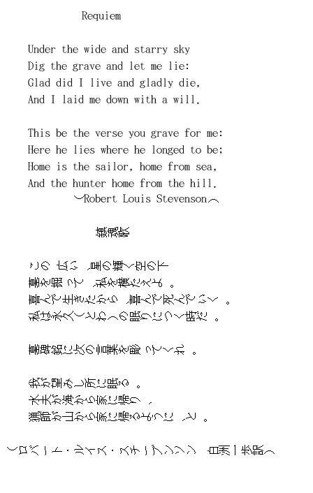

| 幕末疾風記 (時代劇) | |
| 白洲一歩 | |
| (2018) | |
勇希太郎幕末疾風記
勇希太郎が女のいる洞窟に通う
今から一五〇年ほど前、江戸末期の話である。
伊豆に獅子の背谷と呼ばれる断崖絶壁があった。
勇希太郎はこの日も断崖の下にある洞窟に急いで向かった。
女と会うため約束の時間までに着かなければならないからだ。
崖の下には勇希家が作った、地下道のような長い穴倉がある。
昔は物置として使用していたが、今はほとんど使っていない。
勇希家は海近くの浦崎藩に属し、窯師として陶器を作る下級武士の家柄で、太郎はその家の長男だ。
太郎が出向いた洞窟は人里離れていて、めったに人が来ない。
獅子の背谷の背後にある山は険しく、海側もゴツゴツとがった岩場に囲まれ、まさに人の進入をはばむ地と言えた。
太郎はたいてい泳いでくるが、港近くの浜からはゆうに四半時は掛かる。
穴倉の奥には太郎の大事にしている物が隠してあった。
中に入ると良い香りが漂っていた。すでに女は来ているようだった。
女の白く透き通るような肌とキリリと跳ね上がった大きな瞳は、やはり太郎の身体を堅くさせた。
「どうしても都に行くの」
と女は言った。
「行く」
と太郎は答えた。
女はふわっと太郎に近づいた。
女の身体が広がって太郎を包み込み、彼女の体温といい匂いが太郎に伝わってきた。
三年前に、こうやって同じ経験をした時、太郎は女に殺されかけたのだ。
あの時、太郎が洞窟に行ったら、岩陰で女が白い裸身をさらして着替えていたのだ。
太郎が今まで見たこともない、均整のとれた身体だった。
「あっ」
と太郎は叫んで、あわてて外に出ようとした。
「見たわね」
女が振り返って言った。
太郎には見覚えのある顔だった。
この女は、太郎の幼馴染み奈津の母で、近在でも評判の美人だった。
名を雪菜と言ったが、どこに住んでいるか誰も知らず、たぶん獅子の背山の奥に暮らしているのだろうという噂だった。
太郎は、光の速さで近づいてきた女に抱きすくめられ、氷片のように鋭く、巌のように強い力に締めつけられて失神した。
気がつくと、女の口に含んだ水が喉を流れてきていた。
女の顔が眼前にあり、その息が太郎に掛かって、いい匂いがした。
しかし、太郎は言いようもなく冷たいものに包まれており、身体中しびれきっていて動けなかった。
雪菜は、本当のところは、夏になると出没する女仙人だった。
この里の山奥は天狗や妖怪が住んでいるという噂のあるパワースポットだ。
「お前は奈津の友達だね。前に見たことがあるよ」
雪菜がよく通る声で言った。
太郎がうなずくと、
「歳は幾つになる」
と雪菜は確認するように訊いた。
「・・・十四歳・・・」
かすれた声で太郎がやっと答えた。
女の力は強くて太郎はまったく身動きできなかった。
「そうか、やはり十四歳か・・・元服は済んだか」
太郎は首を横に振った。
太郎は雪菜の娘奈津と同い年だった。
仙女は、万一人を殺さねばならない時でも子どもを殺めることは避けていた。
現在の成人式にあたる元服は、当時十五歳頃に大人になる証として行うが、太郎はまだであった。
「私の裸を見たからには殺さねばならぬが、お前はまだ子どもだ。生きたいだろう」
と女は言った。
「生きて都に行かなければならない」
太郎はかすれた声でやっと答えた。
「都へ何をしに行くのか」
「悪い奴らを倒しにいく」
仙女は笑った。それから、
「三郎はどうしている」
と尋ねた。
三郎は太郎と三つ違いの弟だ。
雪菜はこの村のことはよく知っていたし、奈津から太郎や三郎のことを聞いているようだった。
「西の都へ旅に出るため、おいらと一緒に修行をしている」
と太郎は答えた。
「お前も西の都へ行くの」
女はそう訊いた。
「いや、おれは東の都へいく」
女はさらに太郎に顔を近づけ、じっと太郎の目をのぞきこんだ。
雪菜の白い肌、大きな瞳が、太郎の顔にほとんど接するようになった。
女の顔は太郎の眼前だ。しばらくして、
「それなら、悪を倒すまで待ってあげる」
と言った。
女の息が芳香となって太郎を襲った。
太郎は何を待ってくれるのか意味が解らなかったが、黙っていた。
「そのかわり用事が済んだら必ずここに帰ってくるのよ」
嫌と言わせぬ力が働いていた。
太郎は自分の芯がクラクラするような目眩を覚え、思わずうなずいた。
「三郎は太郎のようにはたくましくない。都で悪やもののけと戦うにはもっと強くなくてはだめだ。これからここへ通って仙術を習うようにと伝えなさい。お前も時々来なさい。それと今日あったことを絶対に人に話してはいけない。もし一言でもしゃべったら、お前の命はなくなるよ」
「分かった。絶対にしゃべらない」
目の前に迫った女の湖のような瞳の中に、自分の姿が映っているのを見ながら、太郎はそう言った。
女は相手の姿を自分の瞳に映すことで、その心を虜にして相手を左右するのである。
この時雪菜は、我が子奈津の将来を太郎に託すようなことになるかもしれない、という予感がした。
太郎は若輩ではあったが、芯の強さに尋常でないものがうかがわれ、雪菜はこの子は将来大物になると直感した。
女は強く抱き締めていた力を少しゆるめた。
それから、三郎がこの小屋に来て習う術について言い聞かせた。
太郎は飛翔・導引・呪術など何やら難かしい熟語をたくさん耳にしたが、恐ろしさで黙って聞いていた。
その一方、太郎は、雪菜という不可解で魅惑的な女性と、人にしゃべることのできない秘密を交わしたことを不思議な快感として胸に抱いた。
祠の空気が暖かくなり、女の体温が上がって太郎に移ってきた。
この時に三年後には必ずここで会うことを約束したのだった。
三年後の期日というのはけじめをつける時なのだと雪菜は言っていた。しかし、何のけじめか太郎は知らなかった。
雪菜は、体力に優れた太郎には優秀な仙人と体術の師匠がついていることを知っていたので、特に自分が技を教える必要はないと判断した。
ただ、まだ足腰も弱く未熟な三郎には、基礎的な仙術を一通り教える必要があると思ったのである。
「いいかい、今話したことを三郎によく伝えておくれ」
雪菜はそう言った。
家に帰ると父の太一郎は作務衣姿で蹴ロクロを回しており、傍らで、やはり作務衣を着た姉の恵が素焼きの茶碗に釉薬を掛けていた。
作業小屋の向こう側には弟子の職人たち五、六人と姉が粘土を菊練りしたり、タタラ板や刷毛を洗ったりしていた。
この時代、各藩では藩財政を支えるために、藩の特産物の育成と販売を進めるなど、藩政改革が始まっていた。
それは多くが商人・商業を抑える武家の立場から遂行された。だからそれまでの藩執行部に代わって、勇希家のような武家の中下層から能力をそなえた人材が藩政に登場してきたのである。
太一郎が登城する回数も増え、それに伴って藩旧来の幹部から、
「成り上がりの新参者めが」
という嫉み恨みを買うことがあった。
浦崎藩では勇希家の作る陶磁器を売りさばいて藩財政を補っていたが、勇希家は家格が低かった。
このため、勇希家は一族郎党が食べていける程度の俵数を賜るだけだった。
だが、近頃は藩への貢献が認められ、下賜の石数が相当に増えてきていた。
太郎、三郎は幼少時から周囲の武家たちの子息から無意味な差別や嫌がらせを受けることもあったが、兄弟が力を合わせ、それらを防ぎ、はねかえしてきた。
やがて、勇希の家は、二間幅の裏通りに面した狭い屋敷を引き払い、幅五間ある表通りの屋敷へ移る、という恩恵を受けた。
道路の違いだけではなく、賜った家も倍の広さになり、屋根も杉皮で覆っただけの置石屋根から、茅葺屋根に変わった。
勇希の家は仲のよい家庭で、家族の絆の強さが四人の子どもを真っすぐな性格に育てた。
互いを思い合う気持ちが強かった。
雑木林に囲まれた、茅葺家屋の戸口から穏やかな陽光が差し込んでいる。
辺りは椎や樫、コナラや橡などが生い茂る里山だった。
家周りには柿･梅や竹などが生えている。また、トチ・クリ・アケビ・ワラビ・シイタケ・シメジ等々たくさんの草木があった。
山瑠璃草・龍脳菊・金蘭・つる人参などの山野草は生薬の材料になった。
太郎は、村の剣道場に通い、家では姉や弟と一緒に竈の燃料にする薪や肥料用の落ち葉を拾い集めるのが日ごろの仕事だった。
父の太一郎が行う炭焼きの手伝いもやった。
小さな頃は、木登り・木の実とり・竹馬・竹トンボ作り・小川での水浴びや魚とり・磯遊び・海水浴など、周囲に多くの遊び場と遊びの材料があった。
昼には野うさぎ・ムラサキシジミやオオムラサキを追いかけ、野のお花畑で眠った。
夜はムササビの飛行を見て、満天の星に祈った。
太一郎は鹿・猪を食用に必要なだけ獲っており、去年から三郎は父についていって狩を習った。
裏山には棚田があり、子どもらは田植え・稲刈りを手伝った。
秋の夜の月見は「田毎の月」を眼前に、母の作ってくれた月見団子を家族で食べるのが恒例だった。
次男の次郎が三年前に裏山の崖から落ち、死んだ。
「次郎は殊に優しい子だった」
というのが姉の口癖だ。
事実、太郎が剛毅な性格で、三郎がお茶目な中で、次郎は家族への思いやりが優先するような、おとなしく優しい性格であった。
次郎の事故死が起きて以後、母は気鬱の病になって一年以上口をきかなくなった。
姉の恵は、次郎と同様優しく控えめな性格で、よく家の手伝いをして過ごしていた。
祖父の時代に村の悪人・魔物を倒して、藩主から表彰されたことが太一郎の自慢であり、太一郎は祖父の教えを守り、折に触れて子どもらに伝えた。
祖父の教えは、「大事を恐れず、小事にこだわらず」ということ、「義を見てせざるは勇なきなり」ということであったが、太一郎は陶芸を生業としており、悪人と出会うような環境ではない。
ただ、太一郎は、下級武士としてのいわれのない差別を受けることに憤慨していた。
太一郎は優れた陶芸技術を身につけているだけではなく、識見にも優れた人物であったが、身分制度は根強く、このためになかなか出世することができなかった。
-----身分制度は親の敵である
子の太郎はそう考えるようになった。
十五歳になった太郎は松風塾の子弟頭となった。
松風塾は近隣の師弟が通う、山麓の剣術道場である。
そこで一番強くなった太郎は師弟頭として登録された。
太郎が悪を倒すため都へ行くと言い出した時、親族は驚いてたしなめ、反対したが、父親は頼もしいとして反対しなかった。
「江戸の上屋敷で若侍を募ることがあるので、機会を待て」
父は太郎に言い聞かせた。
悪と戦うというのは祖父の遺伝子が太郎に伝わったからである。
勇希という姓は、祖父が村の悪人・魔物を倒した時に村中から感謝され、藩主から改姓を賜ったものだった。
ところで、太一郎は、その昔独り身の時に合戦場で殺し合いをやった経験があるらしく、夜中によくうなされていた。
太一郎は何人かの敵を斬殺したようだった。
「殺さなければ殺される」
寝床で時々口走っていた。
さて、太郎は洞窟から家に帰った時、雪菜からの、〝仙術を習いに来るように〟ということづけを三郎に伝えた。
「このことは他言してはならないぞ」
と三郎に言い、それ以外は、誰にも何も話さなかった。
三郎は、言われた通り洞窟に通って、雪菜から仙術の基礎を習い始めた。
導引・呪術・高所居住・飛翔･隠遁の技、それぞれを習得した。
導引は道教の修行の一つで、様々な身体の動きと呼吸法を組み合わせる体術である。
三郎は小屋に通ううちに雪菜に会うのが楽しみになってきた。
雪菜の美貌と魅力が、思春期を迎えていた三郎を惹きつけたのだ。
ある時三郎は洞窟で雪菜の美しい姿を絵に描いた。
浮世絵のような、艶やかでどこか生々しさのある絵だった。
三郎は小さな頃から絵を描くことが好きで、辺りの風景や身の回りの物を描いていた。
三郎は、太郎と同様、山麓の松風塾に通っていたが、塾の師は三郎の画才を認め、何とか良い師匠につけてやりたいと思うほどだった。
雪菜は、三郎が描いた自身の絵を見つけた時三郎を叱りつけたが、奪い取った絵を眺めて一瞬感心の態を示した。
-----ほほー。なかなか上手だな。
と思ったが、
「以後私を描いてはならぬ」
と三郎をさとした。
三郎は修行とともに成長し、身のこなしが滑らかに、速くなってきた。
三郎は数年の間身体と頭を鍛え、柔術と走力を身につける一方、ものの見方・考え方を習った。
太郎は何回か三郎について獅子の背谷の洞窟に行ったことがある。
時々洞窟に来るようにと雪菜から言われていたし、三郎がどういう修行をしているのか確かめたかったうえ、何よりも雪菜に抱きすくめられた記憶が忘れ難かった。
女の息が芳香となって太郎を襲った時の、あの雪菜の姿態に、クラクラするような目眩がした、その記憶の中で洞窟に惹きつけられたのであった。
知恵の仙人と体術の師匠について学んでいる太郎の修行は、三郎よりも戦闘的だった。
ただ、雪菜といる時には太郎は安らぎのようなものを覚え、心身が楽になったのである。
太郎は柔術で三回に二度は師範に勝てるようになった。
走力では真っ暗闇の中、数十里を矢のように速く走れる技術を身につけた。
剣術では、道場でのたゆまぬ練習のほかに、深夜、里山を駆け巡って行う素振り、時々出てくる妖怪や天狗相手の剣術によって力を磨き、道場主をしのぐ力量となった。
太郎は筋骨たくましく引き締まった顔つきになり、十八歳の誕生日を目前にひかえて、身の丈も体の重さも父親以上になっていた。
やがて浦崎藩の江戸上屋敷要員の募集に応じて藩の試験に合格し、江戸行きが決まった。
都行きに反対していた母も太郎の決意が揺るがず太一郎が反対しないという現実の前で、ついに自身の意見をおさめざるをえなくなった。
さて、三年前に雪菜が言ったけじめとは、都へ行って悪と戦う能力がついたのかどうか、その力を確かめるということだった。
「胸も足もたくましくなったね。ずいぶんと修行を積んだようじゃないか」
雪菜は、太郎の身体を抱いたまま確かめて、そう言った。
奈津から太郎の修行ぶりを聞いていたに違いない。
雪菜が太郎を抱いたのは、あれから初めてだった。
二人は抱き合っただけであった。
それ以上は何事も起こらなかった。
こうして雪菜は太郎との別れを惜しみ、太郎はひたすら畏敬の念を抱いて、じっとしていただけであったが、太郎の芯がクラクラとして目眩がしたのは前と同じだった。
雪菜は、太郎が洞窟を出る直前に、称名の技と別辞を与えた。
称名とは、仏の名を唱えること、いわゆる念仏のことだ。
「困った時にこれを唱えなさい。苦しさから救われるよ。但し、使えるのは一度だけだよ」
女によれば、尽十方無碍光如来という称名は、昔流罪となった親然聖人から教えてもらったものだという。
だから女は数百年を生きてきたことになる。
しかし雪菜が称名を使えるのは一度だけと言ったのは誤りで、一度唱えればそれでよいという親然の教えを誤って覚えていたものであった。
「中国だけでも崑崙山を中心に千百五十三人の仙人がいる。印度の諸仏・賢者も、大きく仙人と見れば、その数はもっと多い。近頃ではエゲレス人のように先を見通す透視術を使う者もいるそうだよ。競争相手は多いぞ。太郎の技を深めるために都の朝市近くに住む尊栄様を訪ねなさい」
雪菜はそう言った。
朝市とは俗世間の意である。
「尊栄様は禅宗の大師匠で、山林江海に隠れ住む隠士の長だが、今は仙人に化身して都の西はずれに住んでおられる」
と雪菜は太郎に教えた。
雪菜はこうして太郎を送り出したのである。
雪菜は十五歳になった三郎に対しても、太郎に与えたのと同じく、「祈り」の技、称名を伝授した。称名は菩薩信仰の極みだった。
親然に教えてもらって以来、称名菩薩は雪菜の守護仏となっていた。
雪菜はとっておきの宝物を太郎と三郎に注ぎ込んだのである。
「三郎には画才があるが、美しいものには気をつけなさい。きれいなものには毒があるよ」
雪菜はそう言って三郎を送り出した。
出立の近くなった日に、太郎にものの見方を教えてくれた知恵の仙人は、
「もう教えることはない。あとは自分で修行するのじゃ」
と太郎に向かって言い、別れ際にエゲレス人の書いたという一編の詩をくれた。
「この歌は、お前が悪を倒して再びこの地を踏む時に読め。それまでは開いてはならぬ」
「世の悪の中には悪い人間もいれば、もののけ・夜叉・幽鬼などはっきりと見えにくい魔物・悪霊もいるぞ。また人の心や身体に食い込むものもある。心して掛かれ」
そう言い含めた。
家では母が
「都では飲み水と女に気をつけなさいよ」
口癖のようにそう言った。
母は一度に二人が旅立つ事態にじっと耐えているようであった。
太郎が東の都に、三郎が西の都に旅立つ日がやってきた。
「私が仕立てておいたもの。着ていきなさい」
前の晩、新しい羽織袴を衣装箱に入れて、二人に差し出した時、母の目は潤んでいた。
翌朝早く起きた母は大きくて真っ白なおむすびを作って二人に持たせた。
「都では飲み水と女に気をつけなさいよ」
母はいつもの注意をこの時も口にした。
「大事を恐れず、小事にこだわらず」
父親は例の教訓を与え、門口まで送ってきた。
姉は村はずれまで送ってきて、道中のご加護にと言って鎮守様のお守りを二人に持たせた。
「くれぐれも気をつけての」
姉はそう言って泣いた。
村境を出て峠の頂から振り返ると、少年時代を過ごした家や古里が眼下に見えた。
峠には柔術姿の師範と化粧した雪菜が見送りに来ていた。
太郎も三郎も雪菜の美しさに改めて目を見張った。
太郎は、故郷との別れより、雪菜との別離に切なさを覚えた。
太郎がふと見ると、雪菜の湖のような瞳が心なしか潤んでいるようにも見えたが、さだかではなかった。
雪菜は餞として太郎に数珠を与え、三郎に筆を渡した。
太郎と三郎は、悪を滅ぼすため、このようにして旅に出て都を目指した。
父 太一郎、旅の女に出会う
それから十年後、五十五歳を迎えた太郎の父勇希太一郎は浦崎藩を退役して隠居した。
母はその前年、次郎の死亡をきっかけに起きた気鬱の病で亡くなっていた。
間もなく太一郎は独り山荘で陶芸に打ち込んで暮らすようになった。家督は姉恵の婿に譲っていた。
ある春の宵、夕焼けが空を染め烏が森に帰る時刻に、三十半ばの女が山荘の柴垣辺りに立ち止まって入り口の方へ声を掛けた。
「ごめんくださいまし」
太一郎が戸口に出ると、庭先に旅姿の女が頭を下げている。
「何用かな」
「お尋ね致します。この辺りにお宿はございますまいか。用事で江戸から参りましたが、夕暮れになり困惑しております」
「いずこへ参られる」
「はい、下田へ参ります」
下田まではまだゆうに一日は掛かるうえ、旅籠のある浦崎へ出るにも時間が遅すぎる。
脇道を抜けて海側へ出ても宿はなく、そこで日が暮れてしまう。
以前にも同じように武家が訪ねてきて太一郎は下の屋敷に泊めたことがある。
「浦崎宿に行くには時刻が遅すぎるの・・・」
太一郎は玄関先へ出た。
近くで見ると、女の身なりは道中姿で、結髪は長船だ。
その様子から、武家の妻であろうと太一郎は思った。
美しい顔立ちで、内面からにじみでる品位がある。
「この手前の小田原宿で旅籠をとるべきでしたが、まだ日が高くて浦崎へ着けるものと思い違いを致しました」
女は困惑していた。
「さよう、海で夜を迎えるわけにもいくまい。この下に娘夫婦の屋敷があるから、そこへ泊まられるかの。わしは独り住まいで、この庵には世話をする者もおらぬでな」
太郎の姉が、勇希家を継いだ婿と屋敷を構えていた。
「・・・有難うございます。どこぞの片隅にでも置いていただければ、誠に有難いのですが」
「屋敷はここから四半時程の所にあるから、同道致そう」
太一郎は女を連れて歩き出した。
女は自分の名を「千鶴」と言うこと、長岡藩江戸上屋敷西山主善の妻であることを語った。
山際まで落ちた太陽が周囲の山や森林を紅く彩っている。
「芍薬や甘草も芽を出したな。これは生薬の材料になる」
太一郎が道の辺の野草を指さして言った。
太一郎が口にする野の草や野鳥の名を聞いて、
「よくご存知なのですね」
と千鶴が言った。
「藩へのお仕えが終わって、ゆっくり過ごすようになってから覚えたのじゃ。野草も野鳥も、この頃はよく見え、よく聞こえるよ」
千鶴は誰もが幸せになるような笑顔を見せて笑った。
千鶴は、五十余りと見える初老の人物、太一郎のゆったりした様子に何やら安堵感を覚えた。
問わず語りに、自分は、一年前下田に出向いた夫の安否が分からず、それを確かめるために旅に出たと打ち明けた。
「江戸では夫は藩の用事で下田へ行ったということ以外は分かりません。女一人で旅に出るのは少し不安でしたが、途中までは供の者がおりました」
太一郎は静かに聞き入っていたが、千鶴に向かって言った。
「さようか、それはご心配じゃのう。・・・わしは、先頃までずっと下の屋敷に住んでいたが、今は娘と婿、それに二人の息子が屋敷を守っている。退役を境に上の山荘に移り住んだのじゃ。心機一転というわけだよ。あっはっはっは」
二人の息子が太郎と三郎で、都合で家督は娘婿が継いでいた
「お独り住まいということですが、・・・」
「うむ、妻は先年病で亡くなったよ」
「・・・誠に申し訳ないことを申しました」
千鶴は消え入るような表情で言った。
日が暮れて空に星がまたたき始め、先方に茅葺屋根の障子からもれる灯影が見えた。
辺りは雑木の若葉が生い茂る里山だ。
婿はまだ帰っていなかったが、娘の佳代が千鶴に言った。
「それはお困りでしょう。何も出来ませぬが、どうぞお入りくださいませ」
それから、佳代は太一郎を見て
「お父上も夕餉をご一緒になさって、今夜はどうぞゆっくりなさってくださいませ」
そう言った。
太一郎は、武士と言っても藩の陶芸品を作るという役目だった。
藩で使う日用の陶器・飯椀や湯呑み・甕・壷などを作っていたが、丁寧な仕事ぶりが評判で領内のみならず、他藩からも注文が来ていた。
その仕事を継いでいる婿の正信が帰宅して、夕食が始まった。
屋敷には、婿と娘、その子ども二人のほかに、女中や下働きの者などがいる。
他に陶芸の土掘りや土練り、素焼き、本焼きの手伝いに男手が必要だったが、弟子四、五名が近隣から通ってきた。
「この頃は、黒船見物のために、この横道を往来する人が増えたようでございますね」
正信は徳利を傾けて、膳を前にした太一郎の杯に注いだ。
「人っ子一人通らぬ山道だったが、この頃は日に二、三人、多い時には五、六人は通りかかるな」
太一郎は杯を口にして言った。
「地元の人間も通るが、府中や江戸、中には京などからもやって来るようじゃ」
太一郎は横の千鶴を見て、そう言った。
「黒船騒ぎで国中が俄かに忙しくなりました」
婿が言った。
嘉永六年、アメリカ東インド艦隊提督ペリーの率いる軍艦四隻が浦賀沖に来航していた。
先刻湯に入り、佳代の着物を借用した千鶴は、さっぱりした表情で色艶がよかった。
麗しい容貌が目立つ女性で、
「きれいな方ね」
と佳代が正信に言ったほどである。
獅子の背は都から遠い鄙びた田舎だったが、浦賀や下田に近く、黒船が来て沖に停泊するようになってから急に人通りが増えた。
「今日は、ご家老から直々に新しい陶芸品を作るようにとのご沙汰がありました」
「ほほう、新しいとは」
「唐人が使う食器です」
唐人との交渉時に持参する手土産として、洋風の陶器が喜ばれるのだという。
そのうち、太一郎の子どもたち太郎や三郎の話が出た。
太郎は江戸に、三郎は京の都に行って、それぞれがひとかどの武士と絵師になっていた。
驚いたことに、千鶴は江戸で三郎の描いた浮世絵を見たことがあると言い出し、千鶴自身もその偶然に驚いていた。
千鶴は絵心があって、身の回りのものを描いたり、評判の絵を見たりしていたので、京から江戸に渡ってきた三郎の絵もたまたま見たのであろう。
太郎や三郎からは数年に一度飛脚便が届くくらいだったが、東の都と西の都で、それぞれ活躍をしているようであった。
太一郎は、彼らから便りがあると近況を記した返事を出していた。
この晩、佳代から、上の山荘に独りで暮らす太一郎の身の回りの世話をする人がいればいいのだが、という話もあった。
山荘には客がきたり若侍が通ったりしていて、その応対も必要だった。
以前、この屋敷の者のうちから誰かを差し向けるという話も出たが、太一郎が断っていた。
佳代は幼児を抱えていて何かと忙しく時々山荘に通うのが精一杯のようだった。
「わし独りでやっていけるよ」
太一郎はそう言ったが、娘夫婦は父親の独り住まいが何かと心配なようだった。
里山の早春の宵は千鶴を迎えていつもよりにぎやかに過ぎた。
千鶴にはこの屋敷の家族の語らいが平穏そのもののように見えた。
何より太一郎の悠々とした様子や穏やかな人柄に胸のうちが温かみを覚えた。
千鶴は自分の事情即ち夫の安否を確かめるために下田に行くということについては多くを語らなかった。
千鶴は翌朝下田へ向かった。
出立の時、太一郎は芍薬や甘草を混ぜて作った生薬を千鶴に差し出た。
「万病に効く薬草だよ。持っていきなされ」
太一郎の心遣いが千鶴の胸に沁み、千鶴は涙が出そうになった。
「お帰りに、また、ぜひお立ち寄りくださいませ」
佳代はそう言って千鶴を送り出した。
太一郎が獅子の背山の山荘に住むようになって三年経っていた。
獅子の背山の後ろは断崖を隔てて海である。
家の前方には菜園と木立があり、その向こう下方には村里が広がっている。
太一郎は、妻の死去と退役を機に、環境を変えて余生をやり直したいという気持ちで山荘に転居したのであった。
陶芸の仕事で使っていた道具や材料も一部を山荘に移した。
陶器作りは午の刻までに済ませ、あとは剣術の稽古や山菜とり、魚釣りで一日が暮れる。
ある日の昼過ぎ、太一郎は山支度で家を出た。
「お父上、今日はどちらへ」
ちょうど下の屋敷からやってきた娘佳代が、柴垣の所でそう言った。
「うむ、山の様子を見てくる」
太一郎が応えると、
「そうですか。おいしいお酒が手に入りましたので、正信様が夕方こちらにお邪魔したいと申しております」
正信は娘の夫であるが、元は太一郎の陶芸の弟子でもあった。
「そうか。それまでには帰って来る」
「はい。夕餉の支度をしておきますから」
里山に初夏が来ていた。
山と言うより丘陵と言う方が当たっている里山で、イカリソウやアケビなどが花をつけ、ゼンマイやワラビがとれる。
シイやカシ、コナラやクヌギなどが新緑をつけている。
積もった落ち葉や土の上に鹿や熊の足跡が見えた。
山の動物たちも春の到来と共に動き出していたのだ。
「おお、今日は出合えたな」
太一郎は、向こうの陽だまりに親子熊が姿を寄せ合っているのを認めながら、いつものように山中を散策し、山菜を少し摘んだ。
「このコゴメはお浸しに、タラの芽はてんぷらにしよう」
太一郎はつぶやいた。
熊はよほど食べ物がない限り人を襲うことはなく、いつも見かける太一郎を覚えているようでもあった。
清流が流れている沢のほとりで川石に腰掛け、ひと休みする。
川には山女や岩魚、鮎の魚影が見える。
-----川魚が動き出しているな。近いうちに釣りをしてみよう。
お城勤めの頃は、山や川に来ることはめったになく、山菜や魚介類をとってくるのは屋敷の下働きたちだった。
今では陶芸の合間に山や海に来て、時には山菜や茸を摘み、魚、貝類をとって帰った。
山を登りきると笹竹の茂る尾根に出る。
その向こうは断崖絶壁で、崖の真下からはるか先まで海が広がっている。
太一郎は尾根から獣道を伝って、潮の匂いをかぎながら海岸に下りた。
----- 今日は潮の香りが強いな。
崖上を飛ぶ鳶の声が辺りに響く。
遠浅の海は凪いでおり、風もない。
この海では、キス・アジ・カマスが釣れ、サザエやコブシ・アワビなどがとれた。
太一郎は、昔、妻や子どもらを連れて海遊びや魚釣りに来たことを思い出した。
----- 太郎は遠くまで泳ぐことが好きで、三郎は海の深い所に潜るのを好んだな。
次郎はよく磯遊びをしていた。
彼はある時不幸にも崖から落ちて亡くなった。
次郎を亡くした悲しみで一時幽霊のようになった妻の姿が浮かんだ。
静かに、規則的に寄せる波音が耳に響き、昔と変わらぬ、海と空の藍が太一郎の心に沁みた。
家族で過ごした海岸の、遠い日々の思い出がよみがえった。
太一郎は、ここで生き、ここで老いることを感じつつ、やり残した仕事のことを考えた。
自分の思う陶芸作品を仕上げること、これが目標だった。
里山の緑、海の藍、この色を焼き付ける釉薬と、それにふさわしい陶器の形を考えては、作り続けた。
太郎、三郎 武者修行へ
ちょっと時間が遡る話である。
都を目指して旅立った太郎と次郎は山道が東西に分かれる所で立ち止まり、
「達者でな」
と言い交わして別れた。
三郎はこのすぐ後、山林で傷ついてうずくまっている大きな山猫を助けた。
山猫の足に塗り薬を塗ってやっただけだったが・・・。
太郎は東へ向かう途上で小悪党に出会った。
そこは都にまだ遠い宿場町だったが、行き交う商人や旅人相手の商いが盛んな所らしく、両替所があった。
三十近い女がこの両替所に行き、小判を両替して巾着に入れ、店に戻る途中で自宅に立ち寄った。
そこへ男二人が侵入して女ともみ合いとなり、男が刃物で女の顔面、頚部等を刺すという暴行を加えた。
「ギャアー！！」
女が痛みと恐怖とで絶叫したところに太郎が通りかかった。
女の叫び声に驚いた太郎はその家に駆け込み、暴漢の一人を庭に投げ落として気絶させた。
残った下手人を見ると、そいつは何と太郎と同藩の武家の師弟で、元は同じ松風塾塾生の姿だった。
男は自称名家の子息で、武家としては太郎の家より格が上だったが、それを何かにつけてひけらかしていばっていた。
当時の武家の子息たちは、志や個性のある者を除き、皆同じような顔つきだった。
同じ顔で「我が藩、我が藩」とか、「尊王攘夷、尊王攘夷」とか同じ言葉を年中繰り返していた。
同じ事を考え、同じ事を言っているから同じ顔になるのだと太郎は知恵の仙人から教わっていた。
武家の子息やその親には、ほとんど目鼻や口のない、のっぺらぼうもたくさんいた。
「この十年お前を忘れたことはなかった。お前は我が藩や我が輩を馬鹿にしており、それが俺を苦しめたのだ！」
他の武士と同じ顔をした彼は叫んだ。
女ともみ合って興奮した男は血相を変えており、今度は太郎に向かってきた。
「この間までおれとお前はずっと一緒に同じ塾で過ごしていた仲じゃないか」
と太郎が言うと、
「そんなことは関係がない。お前のことはずっと忘れぬ」
悪党は何事かを叫びながら太郎に打って掛かってきた。
日頃から、太郎が歯に衣着せずに物を言うことが気に入らなかったらしい。
上士の息子はみんなに対して尊大な態度を示す一方で、内実は傷つきやすい性質だった。
長い間その男が太郎に持ち続けた恨みは深いものであり、それだけしつこい攻撃ぶりだった。
彼は思いも掛けぬ手を使ってきた。
太郎は、その男が旧知の者ゆえ、自分からは攻撃せずに身をかわしていたが、殺意を感じてやむをえず反撃に転じた。
太郎は、男に取り憑いた悪魔の詐術をすぐに見破り、同じ術で相手に向かった。
「ずっと忘れぬというお前の言葉を、そっくりお前にお返しする」
太郎が繰り出した網に掛かって男がひるんだ。
小悪魔の顔がみるみる青く変わったところを胴締めで気絶させ、二度と悪さをしないように、利き腕の筋を切り裂いてから、池のほとりの木にしばりつけておいた。
一方、三郎も西の都に着くまでの間に小悪魔に出会った。
三郎が、とある宿場町の木賃宿に着くと、上がり口の所に客が二、三人いた。
その中に派手な着物を着た色っぽい女がいて三郎の方をちらっと見た。
三郎が案内されて大部屋に座ると間もなく、先ほどの女が隣に来て膝を崩して横座りに座り、汗をぬぐっている。
着物の割れ目から赤い襦袢が見えた。
「お前さん、都へ行くのかえ」
女は三郎を流し目で見て言った。
「ああ、そうだ」
女は、田舎にはいない、垢抜けのした顔立ちとすらりとした体つきだった。
女は何かと三郎に話しかけ、やがて、
「お前さん、近所の居酒屋まで一緒に連れていっておくれでないか」
と言いながら、身体を寄せてきて柔らかい手で三郎の左腕をつかんだ。
「なに、ちょっと知り合いの居酒屋なんだがね、一人で行くのもなんだから。物騒な男たちが多いからねー。私がおごるからさ」
確かに、脱藩した食い詰め浪人や故郷を捨てたり捨てられたりした浮浪者が増えてきて、町にうろうろしており、彼らの喧嘩もしばしば起きていた。
晩飯まで一時あったので、三郎は女と出かけた。
三郎は、母親が〝女と飲み水に気をつけなさい〟と言っていたことを思い出しながら女の後についていった。
居酒屋で三郎の左に座った女は、名前を恵美と名乗り、酒を三郎に注ぎながら自分の身の上を語ったり、これから西都の実家に帰るところだと話したりして、その間にだんだん三郎に寄り添ってきた。
数年前東の都に嫁いだ自分が、板前の亭主と別れて実家に帰るのだが、これからどうするか自分の身の上が不安でたまらないとか、都では亭主と一緒に小料理屋を営んでいたとか、三郎の顔すれすれに自分の顔を近寄せて、小さな声でささやくように言った。
女の脚が三郎の脚に接触して、着物が割れて赤襦袢が露出し、化粧の甘い匂いが三郎の鼻腔を打ってきた。
恵美は時々涙まじりの声になり、やがてなんだか疲れたから奥の座敷で休みたいとささやいた。
三郎の手を取って立ち上がった女は、二間続きの座敷に行くと奥の襖を開けた。
そこには派手な布団が敷いてあり、恵美はちょっと休むからと言い、着物を脱いで赤い襦袢だけになり、横になった。
襦袢の真っ赤な色と、はだけて見える、白い胸の谷間が三郎の目を刺激した。
「肩が凝って気分が悪いから、ちょいともんでおくれ・・・」
女は甘い声で三郎に懇願した。
三郎が女の肩に手を掛けると、彼女は乳房をあらわにして三郎にしがみついてきた。
三郎がたじろいでいると、女は三郎の手をつかんで自分の胸に持っていき乳房を握らせ、
「あ～ッ」
と甘い声を出した。
声を合図にしたかのように、
「おれの女に何をしようってんだっ！」
やくざ風の若い男が部屋に飛び込んで来た。そして、
「命が惜しければ金で片をつけやがれ！」
と大声で怒鳴った。
手に鋭く光る短刀を持っていた。
「そういうことだったのか」
三郎はそう言って、男が振りかざした腕を逆手にとってねじ伏せた。
恵美は部屋の隅で様子を見ていたが、男がねじ伏せられたと見るや、男の持っていた短刀を奪い取り、それで一息に男の利き腕を突き刺した。
男は絶叫して座敷を飛び出していった。
「あいつは悪い男で、いつも私の後を追い回しているんだよ」
乳房の出た胸を返り血で幾らか染めて、女は息をゼイゼイと弾ませながら言った。
翌日になると、
「お前に惚れたんだよ」
と恵美は繰り返し言って、三郎の後を付いてきた。
恵美は以後ずっと三郎を追いかけ、三郎にまとわりつくことになるのである。
一方、太郎は東都に着くまでの間に、次の悪党たちに出会った。
当時、各地で打ち壊しが起き、幕府の危機感が下層民に対する政策となって表れた。
旧里帰農令・物価引下令・七分積金令、また石川島人足寄場設置策などが次々に打ち出された。
旧里帰農令は農民の江戸流入を防ぎながら、農村の復興を目指したものである。
物価引下令は打ち壊しの直接の原因となった米価の安定をはかり、七分積金令は江戸の町人用費を減らし、その七割を町会所に積みたてて、非常の際の米穀備蓄と武士への低利融資金とするために行われた。
石川島人足寄場の設置は無宿人に対する禁足策だった。
太郎が立ち寄った叔父の屋敷で目撃したのは、七分積金令で集めた町人用の金子を自分の懐に入れていた役人たちだった。
叔父は代官を務めており、住まいは代官屋敷だった。
悪役人たちは、集めた金を町会所からくすね、遊興費に当てている集団で、帳面合わせは町会所に勤める者にやらせて露見しないようにしていた。
その悪事に気づいた代官の叔父が、悪役人の取り調べをしているところに、太郎が行き合わせたのである。
「久しぶりじゃの。ゆっくりしていくがよい」
と叔父は言った。
屋敷にしばらく滞在した太郎は、透視術を使い、また太郎に協力する仙人と力を合わせ、詐欺、横領事件の証拠品と証人をそろえて叔父に報告した。
すべての罪状が明らかになり、悪役人たちにはお白州に於いて厳罰が下された。
太郎が東都に向かって旅立つ朝、叔父は屋敷の前で太郎を見送った。
「恐るべき技を持った若者に育ったものよ」
代官の横にいて、やはり太郎を見送っている内儀につぶやいた。
その日、太郎が峠道に掛かった時、
「これでも食らえ」
「串刺しにしてくれる！」
武家四、五人が叫んで太郎に刀で切り掛かってきた。
大怪我をしたのは打って掛かってきた男たちの方だった。
太郎が切っ先をかわして身をよけ手で払ったら、男たちがつんのめったり、転んだりして自分のかざした刀で肩や足を深く傷つけた。
彼らは町人用の金子をくすねていた悪集団の残党、その実は妖怪たちだった。
妖怪が人の形をして逆恨みをしたのだ。
太郎は、倒れている悪党らをしばりあげ、東の都へ向かった。
この様子を遠くから眺めていた人品卑しからぬ年輩の武士がいた。彼は後に、自分が出入りする江戸浦崎藩上屋敷で、太郎の昇進を浦崎藩家老に推挙することになる人物である。
「なかなかの若者だな」
武士はお供の者につぶやいた。
時は江戸時代の末で薩長連盟が倒幕を幕府軍が攘夷を唱えていた時代だった。
多くの人々が時代の風が変わりつつあることを感じ始めていた。
相模の国の沖合に黒船がきて大砲を放ったという噂が国中に広まって間もない頃である。
西の都に着いた三郎は住む所を探し、都に慣れている恵美の世話で大川の脇にある長屋に入ることになった。
長屋には大道芸人・易者・行商人・渡り職人等が住んでいた。
都の飲み水は汚れていると言って、浄水石という石を商う店があり、河原で拾ったただの石ころに多少の手を加えて、この石は毒物を除去すると宣伝して売っていた。
ところが、加工する際に石に着色する染料が有害な物で、この石で水を濾過して長年使っていると、血圧が下がって身体に発疹ができたり急に倒れたりして、やがては命取りになるという代物だった。
店ではこの石の致命的な欠陥に気づいていたが、人の命より我が身の得と割り切り、毒害があることを隠し続けて石を商っていた。
田舎から来た三郎は、都の飲み水があんまりまずいので、店の品物なら大丈夫だろうと思い、この石を買って使い始めた。
三郎は敏感な体質で他の人の数倍早く反応する。
二、三日もすると手足にブツブツと発疹が出てきて、目眩を覚えるようになった。
「この石はインチキ石で、使っていると重い病になるらしいよ」
恵美が仲間から聞いたと言い、三郎にそう告げた。
三郎が試しに石による水の濾過をやめると、一日で発疹の色が薄くなり、二日で発疹が消えた。
三郎は店に出かけ事情を話して返金を求めた。
だが、悪徳商人は三郎をゆすりたかりの類として扱った。
店は役人に大枚の賄賂を届けたり、腕の立つ浪人を子飼いにしていたから、強気だった。
「若造に商売の邪魔をされたら面倒だ。奴の口をふさぐように、痛い目にあわせてやってくれ」
店主は浪人数人に頼み、三郎攻撃策に出てきた。
ある冬の日、三郎は都の西北の大きな橋にほど近い川沿いで絵を描いていた。
ここは春の桜・秋の紅葉と、四季の景色が美しい名所だった。
三郎が、山麓の雪景色に埋もれるような様子の人家を描いている時、七、八人の浪人が抜刀して三郎を切りに来た。
三郎の反撃により、浪人たちが雪道に気絶したのは、それから数分の後である。
やがて役人が来て浪人たちを引き立てていった。
市中へ帰った三郎は、道場の塾生の親で同心を務めている者がいたので、そこを通して事情を上申した。
悪の一同には厳罰が下り、店はお取り潰しとなった。
やがて三郎は長屋暮らしにも慣れ、絵と武道の修行をする場所、道場を探した。
一方、東都に着いた太郎は、浦崎藩上屋敷の宿舎に入った。
身分制度の壁は厚く、太郎の部屋は長屋門にある下級武士用の粗末な袖部屋だった。
しかし太郎は峠茶屋で太郎を見ていた武士の推挙を受け、藩から特別な給付金と自由な時間を賜った。
お陰で悪の退治準備に、かなり自由な生活ができたのである。
東都は田舎から出てきた太郎には音がうるさく、落ち着かない所だった。
都は、通りで話したり叫んだりする声、物売りの声、馬が通る音などざわざわした物音で満ちていた。
太郎は故郷にはない建物や食べ物に最初は驚いた。
何より人々が蟻塚に群がる蟻のように、大通りにたくさん群れている光景が珍しかった。
太郎は故郷で一応の修行を積んでは来たものの、悪人、怪霊の潜む都で何度かだまされた。
羊頭狗肉という言葉があるが、偽物を本物と偽って売りつける者が多くて、食べ物でも身の回りのものでも偽物が横行していた。
太郎は故郷の雪菜が教えてくれた高僧尊栄を訪ねた。
「尊栄様は禅宗の大師匠で、山林江海に隠れ住む隠士の長だが、今は仙人に化身して都の西はずれに住んでおられる」
と雪菜が言っていた。
仙人は山に住む。
山は東都の西はずれ、城山という所にあり、東都からはひとっ飛びの距離である。
山上に大きな修行場があって、その脇にある建物の一室で、仙人は口頭試問を行った。
「当道場は、入門の目的が確かで厳しい修行に耐えられる者のみに入門を許す。汝の入門目的と今までどのような技を習ってきたか、述べよ」
「はい。目的は、世の悪を倒すための力を身につけることです」
太郎は大仙人の問いにそのように答え、また、故郷の道場・知恵の仙人・雪菜の下で行ってきた修行について述べた。
そして、
「さらに力をつけるためいかなる修行にも耐え、厳しく身を律する覚悟です」
と結んだ。
「悪とは何か」
「はい。悪とは、他に害悪をなす悪人・悪霊・魔物・もののけ・妖怪などです」
「悪人・悪霊はともかく、もののけ・妖怪も悪か」
仙人はそう問い返した。
「他に害悪をなさなければ悪とは言えません。他に害悪を与えるもののけや妖怪は倒さねばなりません」
と太郎は答えた。
数日後に大仙人は、入門の経緯が明確であるとして、太郎の入門を許可した。
太郎はこの仙人の下でそれまで聞いたことのない不思議な智恵や祈り・体術を習うこととなった。
まず太郎は、〝新たな自己を実現する〟という智恵と術を身につけた。
それは、何をなすかという行為を通して新しい自分を創る術である。
経験の浅い未熟な新参者として自分を規定することではなく、悪を倒すという行動、そのための厳しい修行を通して、強く新しい自分となるのだということを、太郎は教わり実行した。
いわば過去から自分を見ないで、今と未来から自分をつかむという技だった。
「修行を行い、未来の目的をつかみ、自分を創れ」
仙人はそう繰り返した。
ここで太郎の修行を概観しておくと、一年目に、高所居住・測量・導引・薬物・護符という仙術を習う。
二年目は、隠遁・奇襲・撹乱・呪術・疾走・飛翔という、いわば戦術を修行する。
三年目、精神統一・道教・諸仏・聖人・賢者のような知術を習得する仕上げの年には、平行して分析・総合・読心という心術を極めることになっている。
技を修める日を経ると共に、太郎の日焼けした顔はますますたくましく、胸板はさらに厚くなり、身体は筋金がビーンと入ったようなった。
大仙人は、太郎の修行ぶりに注目し、それとなく目を掛けるようになった。
仙人の弟子は国中から来ており数十人を数えた。
その中で、太郎は笠井俊介という男とその妹優貴に出会い、だんだん親しくなった。
俊介はやや小柄だったが、武芸に秀で、博識且つ剛毅だった。
優貴は、辺りがぱっと華やかになるような雰囲気のある女性で、際立って美しい顔立ちと調和のとれた体つきをしていた。
優貴は城山はずれの村から修行に来ていると言った。
太郎は、優貴と会っていると、昔どこかで会ったことがあり、何か安心するような懐かしさを感じた。
それもそのはずで、優貴の母は獅子の背山に住む雪菜の化身だったのだ。
雪菜が我が子奈津を優貴に仕立て上げて城山に連れて来ていた。運命の糸が太郎と雪菜、優貴を繋いでいたのである。
さて、西の都の三郎は、都の山腹の仙化塾という道場に所属し修行を始めた。
三郎はここで雪菜が教えてくれた基礎技術をさらに深め、学ぶ領域を広げた。
透視・直感・催眠・描画など諸々の技を好んで習得した。
ここの修行で三郎に一番ためになったのは、いわば「自然術」の会得だった。
三郎は、古里の雪菜がみずからの師匠親然から学び、三郎に教えた自然流の術即ち行雲流水術について、その基礎技術は習得していたのだが、仙化塾でこの術を真に極めているという冬舟なる高僧に出会ったのである。
冬舟は、自然術会得のほか、絵画術に対する三郎の才能と熱意を見てとり、一対一の指導を始めた。
素描・色付け・仕上げの各段階を、筆使いや絵の具の使い方などと共に丁寧に教え込んだ。
指導の最終段階で冬舟は、
〝心身を解放して、行く雲・流れる水の如く自由な心境に至り、物事の真髄を喝破する〟
という技を三郎に教えた。
これが冬舟自然流の極意だった。
「祈念して心を澄まし、心の鏡に物事を映してみよ」
と冬舟は言った。
この術を身につけてから、三郎は物事がよく見えるようになった。
冬舟は、また、画業で偉大な功績のある雪舟の業績を顕彰するとともに、雪舟の技を広げようとしていた。
三郎はこの道場で冬舟から高名な雪舟の墨彩画・人物画の特徴を学んだほか、雪舟と旅・中国に於ける雪舟などという講義を受けた。
この時代、東の都で浮世絵がはやり、西都でもその絵のことが話題になっていた。
版画の出現と技術開発で、大量生産ができるようになり、絵に対する人々の夢が満たされることとなった。
華やかで、自分たちの生活に密着した作品に庶民の人気が集中した。
錦絵とも呼ばれる多色摺りの浮世絵は一組の版木から二百枚を単位として売れるだけ擦られた。
その中のから西都へも渡ってくる絵があり、中でも広重の風景画や歌麿の美人画は、独特な形取りや優美な色彩で三郎を魅了した。
三郎は、冬舟の紹介で西都随一という浮世絵の大家・彩麿に付いて、浮世絵の描画技術を習った。
「女性の形と共に、心を見よ」
「女性の心が解らなければ、女性は描けぬ」
彩麿はそう教えた。
また、
「心でつかんで風景を描け」
とも言った。
「形だけを写しても平板な絵になるだけだ。対象の核心に迫り、対象を見る己の心を見つめることが肝要なのじゃ」
ある日、三郎が彩麿の家に入ろうとした時、彩麿の娘、綾が玄関を出てきた。
------- 可愛い女性だな
三郎はそう思った。
娘は三郎に会釈をして通り過ぎた。
眉の形がクッキリとしていて唇のふっくらした、日本髪の似合う美しい人だった。
次に会った時、三郎は自己紹介をした。
「勇希三郎と申します」
「綾です」
綾は小さな声で言い、恥ずかしそうに顔をうつむけた。
「三郎は絵がうまく、そのうえ武術が無類に強い」
綾は父からそのように聞いていた。
優しい顔と心遣い、たくましい足腰をした三郎は、周囲の女たちの興味と関心を集める男であった。
次に二人が出会ったのは、三郎が彩麿の指導で絵を描いているところに、綾がお茶を持ってきた時だった。
「綾様は絵を描かれますか」
「いえ、私は描きません」
綾の頬が紅く染まった。
綾は、三郎のような文武両道に秀でた男に初めて出会った。
その出会い以後、二人は何かと話をするようになり、次第に互いを好感を持って見るようになった。
さて、三郎には、歌麿や広重が女性の心理や風景の心を見事に描き写していると思え、数限りがないくらい模倣画を描いた。
三郎は、冬舟から描画の技術を習うかたわら、彩麿仕込みの上方浮世絵の手法も取り入れ、また、東都風の優美な絵も描いて、それらを自分流に総合した絵を目指して画才を磨き続けた。
そのうちに、
「綾さん、貴方の姿を描かせてもらえまいか」
三郎は思い切って綾に頼んだ。
内気な綾はぱっと頬を染めた。
綾からすれば絵の対象になることは、三郎に心身を預けることと等しいように感じられたのである。
しかし、綾は頷いていた。
綾は三郎に恋をしていたのである。
三郎が綾の絵を描き始めてから、絵の輝きが一段と冴えを見せるようになった。
綾は可愛いだけでなく、出処進退、身の振り方をわきまえている賢い女性だった。
三郎は彼女と過ごすことで心の平安を覚えた。
可愛さ、賢さ、そして平安が三郎の絵にも表れた。
やがて三郎の描く絵が評判となり、彼は西都の人気絵師となっていったのである。
収入が増え、川端の長屋を引き払って都の中心に住まいを移した三郎を、いつものように恵美が追ってきた。
「貴方の近くに置いてちょうだい」
と言い、何やかやと言って三郎の家に出入りをしていた。
三郎には引く手あまたの女たちがいたが、今までは誰と特定して恋し合うようなことはなく、恵美とも一線を画して付き合った。
ただ、最近は綾への想いが何時になく深くなってきたようだった。
恵美はかつて、東都で小料理屋を営み、やがてはチンピラの夫と組んで美人局の一翼を担う女になったのだが、三郎と出会ったことがきっかけで生まれ変わっていた。
彼女は自分の経歴を恥じ、服装も生活ぶりも以前とは比べものにならないくらい質素にしていたが、三郎と名がつくものはすべてを後生大事に抱え込み、ひたすら三郎のために動こうとしていた。
その気持ちが強すぎて、かえって三郎に窮屈な思いをさせているということには気づいていなかった。
三郎と他の女が接近することがあると嫉妬に狂い、殊に綾が三郎の絵のモデルだと解ると、恵美は夜叉になって狂い回った。
「あっあっあー！」
たまたま話が綾に及ぶようなことがあると、恵美は頭を抱えて叫んだ。
こういう状態に迷惑したのは三郎で、恵美の深情けが三郎から人を遠ざけ、殊に女性たちは恵美に恐れを抱いた。
三郎は恵美に自分の後を追いかけるのはやめるように言い聞かせたが、追っかけをやめて二、三日も経つとすぐに元に戻ってしまうのだった。
三郎は絵を描いて売り、一方で体術に磨きを掛けた。
また、悪退治の大望を忘れず、体技・心技の修行を怠ることはなかった。
仙化塾の塾生で、三郎の志に共感して、親しくなる者も出てきた。
太郎がそうだったように、悪打倒の血が流れる血筋に加え、故郷で雪菜から鍛えられたことが、三郎にも不屈の情熱を与えていたのである。
情熱の発露は周囲に伝わり、理解者を生み出す。
仙化塾の指導者も三郎を応援し始めた。
「雪菜から教わった技が効いたな」
ずっと後年になって生涯を振り返った時、三郎は太郎とそう話したことがある。
「そうだな。殊に〝祈りの技"が心を支えたな」
と太郎は応じた。
祈りの技とは菩薩信仰の称名である。
雪菜が二人に伝授した祈りの技が、生き方の根本に流れていたのは太郎も三郎も同様だった。
そして、悪を打倒するという志の強さが、彼らを応援する者を増やしていった。
三郎が、西の国々にいる悪の動きを東都の太郎に知らせることはずっと続いていた。
また、絵で稼いだお金の中から、東都にいる太郎に相当の金子を送っていた。
倒幕を唱える薩摩や長州などの武士が西の都に次々集まってきて、幕府側の勢力と衝突したのはこの頃で、抜刀した薩長の武士や新撰組が都大路を駆け回った。
慶応元年（一八六五年）、時の将軍徳川家茂が入京し、後見人徳川慶喜は大坂城に入城した。
「えらいことよ。世も様変わりだなあ。将軍様が都までおいでになるとはなあ」
人々はそう言って驚いた。
ちょっと前までは朝廷の勅使が東都の幕府に挨拶に行っていたのだ。
今や幕府の力が弱まり、欧米は開国を迫った。
幕府は外国との通商条約を結ばざるをえなくなっていた。
幕府側も尊王側も居丈高になり、目が血走っていた。
この武士たちは、西都の人々にとっては触らぬ神に祟りなしというような怖い存在だった。
混乱した世相に乗じて、あちらこちらの商人や役人が様々な罪悪を犯し、露見してもその責を負わないという事態が続いた。
また相次ぐ天変地異もあり、人々は、あれこれの異常事態に慣れっこになって、仕舞いには何も感じないような有様を呈することとなった。
何が起きてもあまり感情を動かすことのない、つらーっとした空気が醸成され、人々の表情がなくなっていったのだ。
「異様なことが多くて、気がおかしくなりそうだ」
「まったくだ。いろいろと起こりすぎるんで、いちいち気にしていられねえ」
「ま、気にしないで生きるしかあるめえよ」
「ほんとによ」
庶民はそのように話した。
それぞれの心の内面はかなりの悩みや葛藤を抱えているのだが、表面はけろっーとした顔で生きる者たちが多くなった。
こういう表情は、この国ではこの時期に東西の都で生まれ、やがて各地へ広がったのである。
そうしなければ、生きていけない動乱の世だった。
悲しい時には泣き、うれしい時に笑うという素朴な時代は終わっていた。
三郎はひたすら自分の絵を描き続けた。
ある日、金色の毛髪をした仏人が三郎のもとにやってきた。
「貴方様の絵を手に入れ、欧州で売りさばきたい。欧州にはない形や色が貴重です。お金はいくらでも出します」
そういう話だった。
こうして外国人と付き合い始めた三郎の絵は欧州に渡って次第に手ごたえを呼んだ。
三郎は、やがてマチス、モネというような世界に冠たる一流の画家にも影響を与えるという、国外でも名の通った絵描きになっていった。
しかし三郎は立派な家に住まうわけでもなく、いばってふんぞり返ることもなく、ひたすら武術と絵描きとに精進を重ねたのである。
今では、かのゴッホが所有していた数百枚の浮世絵の中に三郎の描いた浮世絵が数枚あることが知られている。
三郎は綾と、彩麿の家や市中で会っていた。
恵美がしばらく姿を現さないので、三郎がほっとしていると、驚愕する噂が耳に入ってきた。
女を食い物にして身を肥やす輩に恵美が利用され、その挙げ句ひどい暴行を受け、その悪党たちから逃げようとして殺されたというのである。
「え！！どこで誰にやられたのだ！」
三郎は家を飛び出し、悪党らを探して、心当たりを尋ね歩いた。
数日後に、三郎は、その者ら三人をつきとめ捕らえて、真相を白状させた。
事態は事実だった。
怒りを押さえきれない三郎は悪党を滅多打ちにした。
この時、追いつめられた悪人の一人が三郎を短銃で狙った。
悪党が銃の引き金を引こうとした時である。
山猫が悪人の手に鋭く噛み付き、弾丸は空中に放たれた。
三郎は、かつて故郷はずれの峠道で助けたことのある山猫に救われた次第だ。
振り向いた三郎は悪党の首を空手で打ち、一撃で倒した。
見覚えのある山猫は三郎を見て一声鳴き、姿を消したのである。
残りの悪党二人も三郎にぶちのめされ瀕死の重傷を負った。
三郎は悪人たちを自身番に突き出した。
恵美は半生悪女だったが、最近は改心して三郎に尽くした女だった。
三郎は、憐憫と哀切の思いから、都郊外の墓所に彼女を手厚く葬った。
ところで、三郎と綾の付き合いに暗雲が立ち込めてきた。
綾の父、彩麿が二人の交際に待ったをかけたのである。
「三郎は異才の持ち主じゃ。このまま西の都に落ち着く人物ではない。東都にいる兄じゃと結んで大望を果たさんとしておる気配じゃ」
「そのことは私も感じております」
と綾は言った。
「お前は我が彩麿家の一人娘。他に子どもはいない。婿殿を迎えて家を継がねばならぬ。お前がこのまま三郎と付き合うことは相成らぬ。私から三郎にもその旨、言っておこう」
彩麿がそう命じた時、綾の顔からたちまち血の気が失せ蒼白となった。当時、親の意見は子の運命を支配したのだった。
一方、東都の太郎は修行を続け、戦のための情報を集めた。
その合間に笠井俊介、優貴の兄妹と近くの海や山に遊びに出かけた。
笠井俊介は〝ものの見方〟に精通していて、太郎が今まで知らない視野からものを見ていた。
妹の優貴は人間の心を透視する技に詳しい様子だった。
俊介は身体の動きが機敏であり、優貴は速い動作にも優雅さが漂っていた。
優貴の周辺には優しい空気があって、それがやんわりと優貴を取り巻いているように感じられた。
「菩薩のような面差しだ」
と優貴を一度でも見た者たちは語った。
青年には身体に震えがくるような優貴の美貌だった。
笠井兄・妹の主な関心事は、太郎と同じように、技の習得であった。
彼らは人の心や物事の本質を見分けるために、いろんな技を学んでいた。
弟子たちは〝全体を見る・先を見る・本質を見る〟という技を大仙人から授けてもらっていた。
物事は目の前の物を見るだけでは理解できない、物事の全体像や先の見通し、物事の本質をとらえることによって、よく理解できるという技である。
太郎はこういう技には初めて接したので、
------さすがに都には偉い仙人がいる
と感じた。
お陰で太郎は世の動きが見えるようになり、もっともらしい言説にだまされることは少なくなった。
都には故郷には存在しないような危ない人間や妖怪類が、危険な姿のまま、または変装して動き回っているということも解かってきて、人に接する時にも物を見る時にも慎重に対処するようになった。
慶応三年(一八六七年）、西都の近江屋で元土佐藩士坂本竜馬が暗殺された。
この前々年には、幕府の天狗党追討軍が京を出立し、天狗党は降伏している。
太郎が都へ来て一年経った。
太郎が経験した悪との戦は三度あるが、一回目の戦闘は都の西北、秩父と武蔵の境目にある山中で行われた。
笠井俊介も一緒だった。
太郎と俊介が所属した武家集団は、押し寄せてくる悪集団を迎え撃つ任務を担っており、二人は、当時新しく導入された鉄砲射撃隊の防護役だったから、常に集団の先頭にいて移動した。
先方も射撃隊を先に立て、秩父峠を目指して登ってきた。
敵はここを突破すれば、都まで攻め上るに平野を行けばよかった。
敵の数は数百人の規模であり、防御する側も同程度の勢力だった。
西・南・北の三方が山に囲まれている地形で、山々の間を川が流れている。
敵が峠のふもとに着いたという斥候からの情報が入った。
「一本道を進んでくるだろうから、そこを射撃隊を先頭に立てて一気に狙うことにする」
こういう作戦で部隊を配置していた。味方の主力は敵を見渡せる小高い場所に陣取った。
しかし、川沿いの険しい一本道を進んできたのは、女と子どもの集団だった。
彼女たちには身体中とげがささっていて血がにじんでいた。
武器は持っておらず杖をついているだけだった。
どういうわけか女たちは、姉妹を集めたように、同じような容貌をしていた。
顔が同じになる風潮は女たちの間にも広がっていたのだ。
先頭にいる二、三人だけ目鼻立ちのはっきりとした個性のある顔つきだった。
「いずこに参られるのか」
先頭にいた都軍の斥候が一番前にいる女に訊くと、
「お陰参りに行く途中、道に迷いました」
こういう返答だった。
「お陰参りなら、道が逆方向ですよ」
と斥候が言った。
「慣れない山中で迷って、怪我をしている者が多いので助けてほしい」
と言って女は涙を流した。
「さようか」
斥候は気の毒そうな顔をした。
当時、お陰参りを邪魔すれば、悪霊・もののけがとりついて、子々孫々祟られると噂されていたうえ、怪我をした女子どもばかりの集団だったので、こちらの戦闘態勢がゆるんだ。
しかし太郎は不審を抱いた。
頭には笠、手には柄杓一本というのがお陰参りの一般的な格好であるのに、柄杓の代わりに彼らは皆太めの杖を持っている。
太郎は念のため杖を検めると言って、女の一人から杖を取ろうとした。
すると、その女が三十尺即ち十メートルほど宙に飛んで叫んだ。
「シャラクサイ！者ども、打って掛かれ！」
そこにいる女たちの姿はたちまち醜い妖怪に変化し、杖に仕込まれていた刀を抜いて襲い掛かってきた。
杖には鉄砲も隠されており、その集団は左右に散って銃撃体制をとった。
こちら側の兵士たちは谷から山上に飛び上がって退いた。
太郎が、山陰にある敵陣の大筒から発射された、空中を飛ぶ弾丸を見たのはこの時が初めてだった。
筒の長い大砲から発射された弾丸はシュルシュルシュルという音響と共に、遠く高く飛んだ。
「おおっー！」
都軍の叫びがあがり、どよめきが起こった。
この弾丸は、空中では女体を丸めた形でピンク色をして飛び、着弾寸前に形を自在に変化させて物体を溶かし去る妖怪弾である。
「この弾、怪しいぞ！気をつけろ！」
太郎が叫んだ。
この弾丸が七、八発ほど炸裂したが、しかし、太郎側の軍が崖の上の巨大な岩陰に集結していたので大岩の一部を溶かしただけで済んだ。
大岩が溶けかかったが、都軍の致命傷には至らなかった。
四方に散った敵軍は三百余の勢力で攻めてきた。
こちらはかねて手配していた武装集団が三方の山上から敵軍を囲んだ。
太郎は高所居住と飛翔術で敵勢力の動向を見てとり、太郎の号令によって三方の山上から一斉に岩落としが行われた。
これで敵軍の大勢は圧死した。
山の下の道々や谷川の辺りに生き残った敵を掃討攻撃する戦いが始まった。
太郎は俊介ら数人とともに崖上で部隊の防護に当たり、登ってくる敵を切り、崖下に落とした。
崖の下には死体が山をなしたが、中にはまだ動いている身体もある。
しばらく激しい戦いが繰り広げられた。
最後まで生き残った十数人の敵たちは死に物狂いで暴れ回ったが、力尽きかかったところを狙い撃ちされ、一人ひとりが数発の弾丸を受けて息絶えた。
こちら側の本陣にも敵将二人が攻め入ってきた。
だが、彼らは鉄砲隊に囲まれて動けなくなり、全員自刃した。
谷では追いつめられた妖怪姿の侍女数十人が滝口から身を投げた。
翌日、亡くなった敵軍の一族・家臣らの冥福を祈るために、都軍は遺体を集め、菩提碑を建てて、丁重に慰霊法要をとり行った。
慰霊法要を行うのは、死者への礼節のためだけではなく、死者の恨みが怨霊・幽霊となって祟りをなすことを恐れたためである。
都軍は太郎の提案で救護隊を作っていた。
この隊は、戦さで生き残り傷ついた者を救護し、応急処置を施す。
敵であっても戦意のない者は救護した。
こうしてこの戦さは終わった。
太郎らは都に帰ると、また修行・訓練を再開した。
笠井兄妹も一緒だった。
この兄妹は、いつも太郎とともに行動し、太郎を支えた。
笠井優貴はいつも優しい声で話した。
その声があんまり柔らかく甘いので、太郎はその声を聞くと、ついうっとりとなったものだ。
彼女の顔立ちや体つきの美しさに、通りかかる者のすべて振り返った。
優貴は容貌の美しさと豊かな身体だけではなく、生きるうえの知恵も人に対する心遣いもある女性だった。
美人で有名な平安朝の小野小町も、ギリシャ神話のヘレネも、きっと優貴の前では顔色を失ったであろう、そういう稀有な女性だった。
優貴はある日、「平和」という言葉と考え方とを太郎と俊介に語った。
この言葉は、それまで我が国にはなかった言葉だったが、学者が西洋語を翻案して、新しい言葉として発表の準備をしている日本語だった。
「そういう言葉があるのか」
太郎は考え込んだ。
優貴が教えたこの言葉によって、太郎は今まで自分が求めていたものが何であるのか分かったのである。
悪・魔物の類を倒して、平和な家庭、平和な世の中をつくること、これこそが太郎の目的だった。
さて、ある日の夕方のことである。
大仙人のいる山の沢陰で優貴が泣いているところに太郎が通りかかった。
優貴は太郎に落涙を見られて驚き恥じて、あわてて駆け出した。
太郎は全速力で走り、追いついて、
「どうしたんだい」
と心配声で言った。
優貴の漆黒の髪が額に掛かっており、憂いを帯びた瞳が太郎を見上げた。
涙で潤った目が大きく見開いていた。
太郎はこれほど悲しげな眼差しを見たことはなく、優貴の身にただならぬことが起きたことを直感した。
優貴はしゃべろうとしなかったが、問い詰められると、城山にある実家の父母が二人とも流行り病の犠牲になったことをとぎれとぎれに打ち明けた。
優貴は話の途中から哀傷に耐えず肩を震わせてこらえていた。
太郎が思わず優貴の肩に手をやると、優貴は太郎にそっと寄り添った。
優貴が嗚咽する小刻みな動きが手を通して太郎に伝わってきた。
太郎は目の前の土手に咲いている山百合を見つめながらそっと動かずにいた。
やがて気持ちが落ち着いて涙をぬぐった優貴を、太郎は優貴の住む山荘まで送っていった。
太郎が優貴を、優貴が太郎を、お互いに想い合うようになったのはこの時以後である。
幕府の幹部・大名・富豪らの悪事や隠蔽事件が相次いで暴露され、まさしく「鯛が頭から腐る」ような風潮が出てきた。
多くの悪者は知らぬ顔をして通していた。
魔物・妖怪・悪霊の類が、昼と夜の境目以後に暗闇の中を横行した。
太郎は体術では柔術を、笠井は剣術を、優貴は合気術をよくし、技磨きのために三人そろって、朝夕野山や川辺を走った。
太郎は城山の道場で教えを受けるようになって視野が百八十度広がった。
彼は、かくして、悪を倒すための力を次第に蓄積していったのである。
「平賀源内、三浦梅園らは、本を学んでだけでは物事を理解することはできないと解っていたんじゃ。彼らは物事の有様を自分の目で研究し、どこでも通用する方法を編み出そうとしたんじゃ。つまり自分のやり方で真実をつかむという方法をとったのだ」
大仙人は道場で門下生にこのように語った。そして、
「事態を真につかむことができる目を養うこと、これが仙術を学ぶ最初の段階なのじゃよ」
と教えた。
〝本能に従いながら、これをコントロールする〟
という技も魅力的だった。
もっとも彼らはコントロールとは言わず、手中にするとか、自在にするという言葉を使っていた。
この技については、一足早く城山で修行していた優貴が太郎に手ほどきしてくれた。
「なかなか難しい技よ」
と優貴は言ったが、優貴の手助けで技の習得を楽しんで出来たのは太郎の幸せだったといえる。
その修行の一端を描こう。
「食欲・性欲・金銭欲を自在にするには、自分の目標をしっかりにらんで一時の欲望に左右されない生活を築くことが必要じゃ」
と大仙人は教え、太郎らはこの訓練を繰り返し行った。
「目標がはっきりしていれば、日常の言動がその目標のためだという意味を持ってくる」
修行時には集中して徹底的に行うこと、早寝早起きや独学研修時間の習慣化なども含めて、繰り返し試みるのである。
こういう訓練には男より優貴のような女性が適している。
優貴の規則正しい生活、てきぱきとした行動ぶりが、訓練を推し進めるのにピッタリ合っていたのである。
太郎はこれらの訓練を俊介、優貴と一緒に行った。
殊に優貴は訓練時間の正確さ、確実さで二人の男性をリードした。
世知辛い都生活の中で、行動がきちんとしていて、しかも優しく純な優貴を見ると太郎は感心し、うれしくなった。
優貴は確実に訓練をこなす一方、その行動が優雅でゆとりがあり、動いていてもその容貌容姿には山百合が風に揺れるような上品さが漂った。
ところで、城山道場が最も重視したものは〝祈り〟の業である。
精神統一と祈りは城山道場で教える技の中心に位置している。
精神統一をはかり、心身を放下して祈るという修行を至る所で行う。
心身放下とは、我執を離れて心身を解放し、自己と宇宙の調和をはかることである。
門下生は、道場では無論のこと、行住坐臥の所作に於いてこの技の習得をはかった。
祈りでは、太郎は座禅を、笠井俊介は称名を、優貴は瞑想をよくした。
修行と思索の末にたどり着く自覚の中から、真に祈念する力を会得し、この技によって、彼らは悪霊や妖怪・恐れ・不安を退散させ、心身の活力を満たす方法を獲得したのである。
城山道場での修業期間が終わる前に、太郎は、大悪退治に乗り出すにあたり、浦崎藩に迷惑を掛けることを恐れ、脱藩願いを出した。
西都の三郎から、綾という女性のこと、自分が父親の彩麿から出入りを差し止められた経緯、東都に上りたいという気持ちを綴った便りが届いた。
太郎、優貴と結ばれる
ある年、この国に天変地異と異様な出来事が、まるで山が次々に噴火するように起こった。
日照りによる飢饉と流行病で東都だけでも数万人が死んだ。
妖怪･夜叉となった女性の窃盗団や殺人犯が増えてきたのはこの時代である。
仙人は言った、
「男だけでなく女まで欲望で目が曇り、自分を映す鏡を見失った。だから地獄に落ちたことすら解らないのじゃ」
一方、悪を倒すという太郎の使命感はますます募った。
笠井俊介も優貴もあれこれの情報を太郎に伝え、相談し合った。
太郎は故郷の姉からの便りで母が病で亡くなったことを知っていた。
姉は数年前に陶芸職人と結婚し、今は、夫・幼児と共に自分の実家にいる、母のとむらいは実家で済ませた、父は陶芸の仕上げと称して山上の庵に移り住んだが、元気でいる、と知らせてきた。
このとき太郎が都に来てから既に三年経ったていたが、太郎はこの手紙によって村では二十一年が経っており、都の年月は故郷の七倍の早さで過ぎるということが分かった。
母の姿が思い浮かんだ。
姉さんかぶりで作務衣を着て素焼き茶碗に釉薬を掛けている母、「田毎の月」を眼前に月見団子を作ってくれたこと、
「都では飲み水と女に気をつけなさいよ」
口癖のようにそう言い、息子二人が旅立つ事態にじっと耐えている母、
「私が仕立てておいたもの。着ていきなさい」
太郎が東の都に、三郎が西の都に旅立つ前の晩、新しい羽織袴を衣装箱に入れて、二人に差し出した時、母の目が潤んでいたこと、
朝早く起きて、真っ白なおむすびを作って持たせてくれた母の姿。
それら母の様子が浮かんでは消えた。
自分の生活に一区切りついたら母の墓参に行くと決め、姉に返事を送った。
太郎は道場に毎日通い、技の修行に明け暮れた。
時間外には武道場や書籍閲覧室に行き、仲間との演習や独習で過ごした。
やがて修行が実って、太郎は門下生の中で主席の位置を占めるようになった。
武道場でも閲覧室でも太郎と共にいつも優貴の姿があった。
門下生の誰もが二人の親しさを認めるようになり、二人を見守っていた。
強く賢い太郎は門下生の敬愛の的であり、優しく美しい優貴が太郎と親しくなるのは自然の成り行きだと皆が感じた。
太郎も優貴も、一緒にいると心が満たされることを感じ合うようになっていた。
一人になるとすぐにまた会いたくなった。
太郎は優貴の黒髪と美しい笑顔を思い出し、優貴は、たくましく優しい太郎の面影を追うようになった。
優貴の母の三回忌で笠井俊介・優貴兄妹が実家に行き、法事を済ませて、優貴が兄俊介より一足先に城山に帰ってくることになった。
俊介は実家の跡目を継ぐための所用で実家に残ったからだ。
太郎は道場のある山上で、山麓から登ってくる優貴の姿を遠くに認めて、手をちぎれるほど振りながら山道の端まで迎えに出ていった。
優貴は太郎の姿を遠くから見て、やはり激しく手を振り、山の坂道を駆け上がってきた。
太郎も山道を駆け下った。
山道で会った二人はどちらからともなく手を取り合い、互いに瞳を見つめ、そして抱き合った。
走ってきた二人の鼓動が互いの胸に響いた。
太郎が求婚したのはこの時であった。
城山の修行を終わった太郎は、優貴を妻にもらう挨拶のため笠井兄妹に導かれて、山麓の村の笠井家に出向いた。
既に両親はいなかったが、実家を守る叔父がいた。
「亡くなった優貴の母は実は仙女の子孫であり、優貴は仙女の遺伝子に反応する」
と叔父は言った。
太郎はさして気にも留めずに優貴と結婚した。
ところで、雪菜も優貴も中肉中背で堅く締まった容姿をしており、ツンと上向いた鼻筋や大きな瞳が、ほとんど同じで、首の下にある黒子まで同じだった。
優貴は、母雪菜が心を込めて育てた自慢の娘、奈津の化身だったのである。 太郎が優貴を見るとどこかで会ったことがあるような懐かしさを覚えたのは優貴の中に奈津が宿っていたからであり、奈津は仙女雪菜の血を引く子どもだったからである。
雪菜は太郎と奈津即ち優貴が互いに想い合う仲になるという成り行きに満足しつつ城山で暮らしていたが、病で夫が亡くなったので、自分も死んだことにして、実は雪菜の故郷、獅子の背に帰ったのだ。
獅子の背山でなければ、雪菜はみずからの若返り秘法を十二分に果たせなかったからである。
-----俊介と優貴には一時悲しい思いをさせても、彼らを自立させる良い機会だ。
雪菜はそのように判断した。
自分は実は生きているという言い訳は、後からいくらでもできるだろうと雪菜は考えていた。
太郎と優貴は朝夕一緒に馬を馳せた。
朝露を蹴って江戸郊外の道場へ行き、夕焼けの道を通って里山の家に帰った。
その間二人は一緒に稽古をつけ、一緒に昼の弁当を食べた。
二人は文字通り連理の枝、比翼の鳥の如く仲睦まじく暮らした。
優貴は太郎の腕の中
太郎は優貴の身体の中
強い太郎と可愛い優貴とが一つになって、二人はうっとり夢の中
太郎と優貴は城山と都の境に住んだ。
そこは里山で、太郎の故郷を思い出させる場所だった。
海こそ近くにはなかったものの、連なる低い山々は野趣に富み、山麓一帯には素朴な里の風景が広がっている。
森、雑木林があり、沼が点在しており、田んぼがあってホタル、カエル、サンショウウオなどと共に石仏や古道、古寺など里山特有の風物が見られる。
ここから江戸市中に寄った場所、江戸の郊外に太郎は道場を開き、里山から通うこととなった。
泰平の世が二百五十年続くうちに、江戸詰藩士の中には、剣術も馬術も十分にはできない者が増えていた。
勇希太郎が道場を開いたという噂が広がり、道場はたちまち八十名の子弟を集めて始まり、半年後には五百名を数えた。
江戸の代々の剣家伊庭道場が最盛時に門弟約一千余名だったから、勇希道場は、わずか半年でその半数近くいたことになる。
名流との誉れ高い伊庭道場には道場の跡継ぎで若い剣客伊庭八郎がいたが、彼と勇希太郎が、江戸城で御前試合をしたことがある。
伊庭八郎は江戸屈指の剣客で天才肌であった。
将軍の御前で向き合った二人は、合図とともに東西にぱっと別れた。
その間合い約二間半、刀は木刀である。
心形刀流青眼に構えた伊庭八郎、自然流青眼崩しに構えた勇希太郎は、互いに向き合った姿勢のまま一歩も動かず、四半時を経過した。
刀を立てていた太郎が右足の指先に力を入れた。
そのとたん、刀の切っ先を相手の喉元へ向ける構えをとっていた八郎が突進してきた。
しかし、八郎の視界から太郎の姿が消えていた。
八郎の刀は襷の形に振られた。
太郎は宙を飛び、八郎の上正面から背後に回っていた。
「それまで！！」
審判の声が響き渡った。
「相討ち！」
八郎の眉間と太郎の左足首にうっすらと血がにじんできた。
太郎は宙を飛びながら八郎の面を打ち、八郎の刀は宙に浮いた太郎の足首に入った。
この噂はたちまち江戸中に伝わった。
翌年、太郎と優貴夫婦は一子小太郎を授かった。
小太郎を育てるうち、太郎は生まれて初めて、愛の何であるのかを知った。
自分より大切なものがこの世にあると分かったのである。
優貴と小太郎は、太郎の命そのものとなった。
そして、大切なものを守るために、太郎はいよいよ悪と戦う時が来たと思った。
その戦さの矢先に、魔物・悪霊は、産後間もない優貴の中に巣くったのである。
ある日、自分の瞳の中に母の姿が映ったので、優貴はいぶかしく思った。
それからしばらく腹痛が続き、漢方の特効薬を飲んだが痛みが去らない。
優貴は医者の門をくぐった。
「どうやら腹中に腫瘍があるようだ。しばらくここに通うように」
医師は診察の後、優貴にそう告げた。
優貴は治療に専念したが、病状はいっこうにはかばかしくない。
長引く病を不審に感じた太郎が医師を訪ねて病気について聞き出した。
「悪いシコリが身体の奥深くに巣くっている、治療をしてはみるが、おそらく回復不可能だ」
と医者は宣告した。
太郎は何時になく驚愕した。
不吉な黒雲の予感。
一点にわかに掻き曇り、黒雲があっという間に太郎を台風の中に巻き込んだ。
医者の言葉は、この上はないだろうと思えるほどの悲しみ、苦しみを太郎に与えた。
この時の様子について、後年、太郎は書籍閲覧室で読んだ詩をよく思い出した。
人生行路のなかばごろ
ある暗い森の中にいた
ああ それを語るのは何とつらいことだろうか
未開のひどく荒れた森
思い出しても恐怖がよみがえる
その耐え難さは死にも近い
（ダンテ 神曲）
妻の中に入った悪塊を駆除するために、医者と太郎は持てる力を総動員した。
医術と仙術のすべてをあげて闘ったが、たちの悪い腫瘍には通用しなかった。
「駆除しても駆除しても、たった一粒残った魔物の種子が増殖してまた悪塊に変化し、身体全体を侵すのです」
と医者は言った。
美しい優貴の容貌がやつれて身体中の肉が落ちた。
乳房は垂れ下がり、おなかと背がくっついて、目だけがキラキラ光るようになってきた。
あんなに可愛かった優貴の容貌が骸骨のようになり、よそ目にも命短かしと思われる状態になってきた。
優貴は必死で、しかし静かに病気と戦っていた。
彼女は愚痴少なく、自分にできる事は懸命にやる人だった。
普段から潔く、そして努力を惜しまない性格だった。
ただ、大きな瞳が下を向いて考え事をしているような時が多く
なった。
それから半年、優貴は帰らぬ人となったのである。
彼女は、息を引き取る間際に太郎を見つめ、
「小太郎を頼みます」
と言い、太郎の手を握ったまま死んだ。
太郎にとっては、一年半の優貴との暮らしだった。
太郎は茫然自失した。
体重が減って顔色が冴えず、表情に生気がなくなり、心身衰弱して笑声も消えた。
数か月の間、くる日もくる日もぼーっとしていて腑抜けのようになり、周囲を心配させた。
しかし小太郎を置いて死ぬわけにはいかず、生来の目標とした悪の退治は未達成だったから、生きていくほかなかった。
笠井俊介や友人知人、時には仙人が太郎の家に出入りして親子を支えた。
周囲の応援と小太郎の無邪気な笑顔の前で、太郎はいくらかずつ元気になっていった。小太郎と仲間たちが太郎の悲しみ、寂しさを癒やしたのである。
しかし、太郎は子育てに慣れず、食べ物やおむつの世話に困り果てた。
太郎困惑の様子に、古里の獅子の背山にいた雪菜が天を飛んできた。
太郎が雪菜に会ったのは村を出て以来初めてだったから、雪菜が現れた時、太郎は驚いた。
「お師匠さん！」
太郎はそう言ったきり後が続かなかった。
優貴を亡くして悲嘆にくれ、困っていた太郎は師匠の出現をたいそう喜んだ。
喜びに加えて、雪菜の容姿に優貴の面影が宿っていることを感じて心底からドキッとした。
ツンと上向いた鼻筋や大きな瞳がほとんど同じだった。
数年前太郎が都に出立する朝、峠で別れた時、その美しさに目を見張った雪菜の容貌はまったく変わっていなかった。
「師匠は、優貴の中に宿ったことがあるでしょう」
と太郎が訊くと、
「優貴は我が子奈津の化身。我が子が不治の病霊に侵されたとあっては黙ってはおれぬ。助けには来たものの、優貴に巣くった魔物には勝てなかったわ。それより、太郎は、私が授けた術で祈ったのか」
雪菜は、そう尋ねた。
「懸命に祈念しましたが、無力でした」
太郎は、事の成り行きに改めて驚きながら、そう答えた。
雪菜の出現といい、雪菜と優貴の関係といい、たいていの事には平常心を失わなくなった太郎も仰天した。
「往生とは、その字の通り、行って生きるということ。生きてよし、死んでよしということだよ。魔物・悪霊が身体の中であばれると苦痛で生きられぬ。優貴が亡くなくなったのも天の定めというほかはない。小太郎はいわば私の孫にあたる。優貴も天国から見ている。私も手助けをしたい」
雪菜は日ごとに若く変化し、身をなげうって小太郎のお守りをした。
雪菜は元々歳をとらない女で、身体も心も若々しく、乳も出るようになって、小太郎は雪菜の乳で育ったのである。
小太郎は雪菜を母だと思ってなついた。
太郎は雪菜の助けで心身が少しずつ回復して、太郎らしい強さが戻ってきた。
小太郎が三歳になった時、太郎は悪との戦いに打って出た。
この時、二十五歳になった太郎は、悪集団の討伐隊に笠井と共に志願した。
太郎は先の戦での手柄を讃えられ、討伐隊副将として派遣された。
当時下総事件が起きた。
「報国義士団」と名乗る集団が万民の困窮を救うと称して、賄賂まみれの重臣を批判し、同志を集め挙兵したという事件だ。
下総国の旅籠や寺を拠点として浪人・無宿人・百姓の次男・三男などが集まり、数百人に達したが、訓練や団結が不十分で、都軍の攻撃により、全員があっけなく討ち死にした。
続いて同様の賊軍集団が上総で兵をあげたが、その数は下総事件集団より多く、総勢およそ一万余となった。
「軍の統制も下総の軍よりはるかにしっかりしている。心して掛かれ」
太郎は都軍に訓示した。
賊軍はしばしば利根川を渡り都へ乱入し、利根川・江戸川流域の多くの豪農らから金や米などを奪い取り、婦女を誘拐し暴行した。
この頃、数年来の不作に加え、貿易による経済変動や、長州藩攻撃のための物資徴発等により、米価を中心に物価が急騰し、西国で頻発していた打ち壊しが江戸でも大規模に起こった。
上総でも米屋･油屋など富豪が打ち壊しに遭った。
このような乱世に乗じて悪霊･悪鬼・魔物たちが日本中を動き回り、彼らがこもった上総城は都軍の猛攻に持ちこたえていた。
ここへ加勢の都軍およそ二万の大軍が上総に到来したので、敵将の老臣たちは大将に撤退を進言した。
しかし悪霊･悪鬼が乗り移って、武名を上げようとはやる若大将は、家来の進言を退け、戦闘に打って出ることを決意した。
敵軍は夜明けとともに、都軍の陣地に突入しようとして攻撃に出てきた。
敵兵中の数百の悪は変幻して不気味な色形の妖怪･幽鬼弾となり、宙を飛んで都軍を攻撃した。
これらは着弾地で飛散して相手を溶かしたり、身体に侵入したりする。身体に入ると黴菌となり強い害毒を垂れ流して人を倒す。
しかし彼らは、上総川沿いの馬防柵の内側から攻める都側の、数千挺の銃と新型迎撃機による激しい防護と攻撃にさらされた。
噴霧銃は霧状の薬をまいて黴菌を消してしまう。
これでほとんどの毒弾は敗れ去った。
ところが、敵が発射した弾丸のうち、数発が都軍の真ん中まで来て破裂した。
粉々に飛び散った弾丸の破片が周辺の武将、兵士にとりついた。
とりつかれた身体はすぐに高熱を発して紅くなり、立っていられずにそのまま倒れ、やがて死に至る。
これによる都軍の死亡者数は数百人に達した。
破裂した弾の破片が太郎の手首に入った。
「ウウッ！」
うめいた太郎は
即座に左手を自分で切断した。
太郎はその場に卒倒した。
馬防柵とは、当時天下無敵とうたわれた敵軍の騎馬隊をこの柵で防ぎ止め、その内側にあって鉄砲で狙い撃ちするために作られた柵であった。
戦さ慣れした敵将が都軍の本陣近くまで攻めて来たが、本陣を防衛する狙撃隊に狙い撃ちされ命を落とした。
決戦の正面となった上総川沿いに三重の柵を構え、その西側を流れる利根川沿いには、さらに一重の柵を設けて万一にそなえた。
これらは太郎側の軍にとっては勝利を呼ぶ重要な布石であり、逆に敵軍にとっては勝利をはばむ障害となった。
この戦いで敵の老臣たちは都軍の鉄砲隊前に突撃していって戦死した。
敵軍は一万人近くの死傷者を出し、壊滅した。
敵の大将は数騎に守られて上総方面に敗走したが、笠井をはじめ数人の武将が飛翔術で追跡し、呪術で悪敵を動かないように固めておいて討ち取った。
左腕を失った太郎は、気絶したまま都へ運ばれた。
太郎が意識を失っている間に、折悪しく、故郷から父太一郎の訃報が入った。
しかし、太郎に伝えようもなく、知らせは後日となった。
太郎の負傷を心配した笠井や仙人、勇希道場の門人、知人が入れ代り立ち代り太郎の家にやってきた。
雪菜の必死の看病もあって太郎は一命をとりとめ、数日後に我にかえった。
病を得た太郎が祈ると、亡くなった優貴が現れた。
優貴は相変わらず整った顔かたちをしていた。
漆黒の髪、ツンと上向いた鼻筋、大きな瞳で太郎の前に出てきた。
「貴方は私が思った通りの強い男だ。命を失わないでちょうだい。小太郎が元気で育っているのでうれしい。私は雪菜の中にいるわ」
優貴は太郎の枕元で、生前と同じ声で語った。
雪菜は、太郎が都で出世をして、娘奈津即ち優貴と結ばれたことで満足していたから、優貴が若くて他界したことは太郎に対して申し訳がなく、謝っても謝りきれない罪を背負ったという思いで生きていた。
雪菜は仙女から菩薩に化身したといっていいだろう。
「生まれ変わった優貴となって、太郎と小太郎を助ける」
雪菜はそう決心して太郎、小太郎に尽くし、暮らした。
雪菜は日とともにさらに若返り、髪の様子や瞳の動きがますます優貴に似てきた。
雪菜の知らせで太郎が左腕を失ったことを知った三郎は、
「私が太郎兄の左腕になる」
と言ってよこした。
三郎は綾との恋が破局を迎えて、失恋をきっかけに自分も東都へ移り住もうかと思っていたところだった。
彼は綾を忘れるために絵と武道に没頭し、優しい顔が怖いような表情になっていた。
悪や魔物が再び戦闘の準備をしているという情報が三郎から太郎のもとへ届いた。
「私も西の都を引き払い、いつでも東都に下る」
ということも書いてあったが、太郎は
「いましばらく出発を待つように」
という返書を出した。
西の悪を倒すためには、三郎の西都居住が欠かせなかったからである。
城山の仙人たちが来るべき戦さの戦略・戦術を考え太郎らに教え、一同で準備を整えた。
この頃、各藩財政の窮乏が藩と悪徳商人との結び付きを生み、藩政はますます腐敗した。
民衆から厳しい抵抗、反発が起きて、悪徳商人排撃の気持ちが広がった。
下級武士の改革派が登場してきて藩政改革が行われたが、藩政に食い込んだ特権商人の抵抗と悪行ぶりもすさまじいものがあった。
綾は、父の彩麿から太郎との付き合いを止めるよう宣告された後、次第に痩せ始め、やがてご飯が喉を通らなくなった。
彼女は骨と皮ばかりになり、人形のように可愛かった容貌容姿が見るも無残な姿へ変わった。
彩麿は医師、祈祷師を家に呼んで綾を治そうとして手を尽くした。
しかし、誰もこの病を治せるものはいなかった。
太郎への想い、外出もできない境遇が綾を追い込んでいたのだ。
綾は祈祷や信心の空気に慣れ親しんで、何ものかに祈るという習慣を身につけていった。
悪との戦さにそなえるため、寺子屋や塾専門の仙人が出現し、彼らはそこの師範の助っ人役となって各地の子どもらに善悪を教え始めた。
すると、その力が子どもの非行だけではなく大人の歪みをただす鏡になった。
村や町の隣組の助け合いが幾らかずつよみがえり、自分の住む所を自分たちで守ろうという動きが出始めた。
長屋住まいの熊さん、八っツァンの付き合いが復活してきたということだ。
人情のある村や町づくりの必要を人々が少しずつ感じるようになってきた。
東西の町々の助っ人が互いに連絡し始め、太郎はこの動きの中心になった。
太郎は三郎と連絡を取り合い、大悪退治を再確認し、連絡を密に行うことを確認した。
この際に、三郎が絵で稼いだお金の中から太郎に送っていた多額の金子が、数年にわたって横領されていることが分かった。
大金をごまかしていたのは、太郎配下で、金銭収受担当の武士だった。
この男は、三郎が送る金額を増やすにつれて、受け取った金子から着服する金額を徐々に増やしており、 その合計は数百両にも達していた。
太郎がただすと、あれこれ言い逃れを並べ立て、仕舞いには
「戦さに備えて貯めておいた」
こういう言い訳を繰り返し述べたため、太郎はやむをえず男の身柄を同心に引き渡した。
横領金から横流しをして既に使われてしまった金額は七十八両と判明。
当時、横領、詐欺による金品の取得は強盗、窃盗の罪に準じ、十両以上は死罪という決まりがあった。
男は斬首により命を絶つ刑罰に処せられ、付加刑として財産が没収され、死体の埋葬や弔いも許されなかった。
西の悪魔・もののけの類が大挙して東に赴くことがあったが、三郎得意の絵画で描いた肖像画で彼らにはすぐに手が回った。
やがて太郎との打ち合わせ通り、三郎は西都で兵をあげ、まず都と周辺の魔物や悪魔・悪霊退治に掛かった。
数か月後、三郎が西の悪集団を幾つか倒したことを太郎に報告してきた。
三郎は、綾が家出をしてお陰参りに身を投じたという噂を耳にした。
綾はおとなしい性格だったが、父、彩麿の言うがままに婿を迎えることに耐えられなかった。
だから、綾はお陰参りに加わることで自分のこれからを見詰め直そうとしたのだった。
綾を失った三郎は悪鬼のようになって、西都周辺で暴れまくっていた。
三郎は仲間を集め、大悪を倒す準備をし始めた。
西の都でも東の都でも大悪との戦いは困難を極めた。
相手はありとあらゆる戦法を繰り出すだけではなく、山海戦術や潜伏戦術で居場所を特定せずに出没したからである。
山海戦術とは文字通り山や海に出没して人々を襲うのだ。
悪人･悪霊・もののけは放置すると黴菌同様に限りなく増殖する。悪がはびこらないように東都の討伐勢力が定期的な夜回りを始めた。
町だけではなく、郊外の山々や海の入り江にも軍を出して警戒した。
この時代には湾の周辺でマグロやコハダ、アナゴがとれ、花街が栄え、遠くに見える連峰に鹿、猪がたくさん生息していたが、悪霊・魔物の出没する場所は衰微して人や生き物が寄り付かなくなった。
敵との戦いに勝つために情報の交換が必要なこと、景気が安定し繁栄が続くことが大切であること、これらのことを都軍が理解し始めた。
太郎は、情報収集をするために、俳諧師を頭とする忍者隊を作った。
忍者隊には新内流しの男女や虚無僧がおり、彼らを通じて全国の状況を収集した。
彼らは、新内流しや僧侶の姿などそれらしい格好で歩いたので、さして疑われることなく旅をすることができたのである。
集めた情報は、太郎をはじめ数人の幹部が聞き、記録には残さなかった。
しかし、幹部の一人が敵の悪人・悪霊と通じていて、こちらの情報が筒抜けになっているということが分かった。
そこで太郎は、忍者にわざと偽情報を報告させて、密通していた幹部武士を欺き、敵の集団が集まってきたところを、一挙に攻め滅ぼした。
裏切り武士は捕まえたうえ、即刻処刑した。
三郎の主導した浮世絵の完成をはじめ、この時代の師匠が深めた茶華道・俳諧・書道や柔術・剣術など日本の技が内外に知られる気配を見せた。
この国には、よその国が、おやっと思うような良い伝統があったが、古い習慣・制度などの弊害や権威主義がしぶとく根を張っていており、伝統の発展を妨げた。
外国は虎視眈々と日本を狙っていた。
太郎は数年に及ぶ戦闘と修行の中で真の生命を自覚するようになり、祈る力によって神通力を獲得した。
同時に左腕なしでも身体のバランスを失わない訓練を重ね、習得していた高所居住・走力・飛翔等の技が後退しないように力を傾けた。
太郎の心身がほぼ旧に復した時、小太郎と雪菜も同道して、墓参のため、故郷獅子の背山に帰った。
この時、勇希太郎は二十八歳、小太郎が六歳だった。
雪菜の年齢は不詳だったが、彼女はますます若返って輝くような具合になった。
太郎と優貴、小太郎が雪菜の中に宿り、彼女に力を与えていたのである。
この時、太郎が故郷を出てから既に十年、実際には七十年の歳月が経っていた。
太一郎と千鶴
-----粘土でも、釉薬でも妙な混じり物がない物を使い、納得のいく形に仕上げたい
これが太一郎の決心だった。
太郎や三郎から何か相談する文がくれば、自分の経験・見聞を記して送るようにしていた。
以前のように、急ぎの仕事や妥協の産物は必要ではなく、日々、焦らず急がず、自分の仕事をしていった。
これまでの人生で出合った様々な苦労や葛藤も消え、今では胸をえぐるような痛みを起すようなこともない。
独り住まいは少々寂しくはあるが、日々の生活は充実していた。
「先生はどうしてゆったりとしておられるのでしょうか」
太一郎を敬う、若い陶芸士が聞いたことがある。
「それは君のようにお務めがないからだよ」
「それだけでしょうか。何か悠々としていて、しかも強いものを感じます」
----- 藩勤めの頃は、忙しい生活、身分の差別、いわれのない蔑視など、気持ちにゆとりがなかった。
「お務め中に、仕事のことで思い煩って胃の病になったことがあるよ」
太一郎は、過去を思い出すように、武家の若い陶芸士に、そう言った。
「そんな時に家内が亡くなった」
胃の不調と妻の死去によって、太一郎は引退の潮時と判断し、隠居を願い出て許された。
「藩の窯師としての仕事については、貴公らが承知の通り、わしの替わりに、婿の正信殿を推挙したのじゃ」
跡目相続では、都へ出た実子太郎、三郎には獅子の背に帰る予定がないので断念し、身近にいる婿、そして孫へと繋ぐことを考え、実現した。
「藩務めと跡目相続に区切りをつけ、自分の生き方を固め直したというわけだ」
太一郎は、それから気持ちが落ち着いてきたと語った。
「陶芸作品の完成が私の目標となり、気持ちが定まったよ・・・あっはっはっは」
様々な束縛から解き放たれた心身は悠然たる風格を太一郎にもたらした。
孫や娘夫婦、家族への視座が固まり、仕事の目標がはっきりしてきたということだった。
太一郎は、意気盛んな頃、
〝獅子の背に生きていきいく夏野かな〟
という句を作ったことがあった。
〝生き生きてここに行き着く秋野かな〟
数十年を経て、庵に移り住んだ折に作ったのがこの句である。
陽が西に傾く頃、獅子の背の下屋敷で、娘が焚く夕餉の煙が立ち昇っている。
正信が囲炉裏で山魚を竹串に刺して焼いている。
四、五歳の子、正一が父親の横にいて見よう見まねで魚を串に通そうとしている。
もう一人の子どもはまだ幼児で囲炉裏脇の部屋で眠っていた。
子どもらは太一郎の孫であった。
太一郎は家族に囲まれ、夕飯になった。
孫が生まれてから、その存在は太一郎に新しい喜びを与えた。
正一は、屋敷でも道でも、太一郎を見るとうれしそうに笑いながら駆け寄ってきた。
「おじいさまーっ」
孫を連れて行く山や海で正一の歓声が響くと、孫と一緒にいる喜びが湧いてくる。
一家はあれこれと話をしながら夕食を食べ、食事が済んでしばらくしてから夜道を下の屋敷に帰った。
梅雨が明けて、里山の樹林に蝉の声が聞こえ始めたある日のこと、庵の入り口で若い女の声がした。
太一郎が仕事の手を止めて玄関を見ると、千鶴が立っている。
「おお、千鶴殿。久しいの」
千鶴を座敷に通して向き合うと、大きな瞳でじっと相手を見る千鶴の表情は変わらなかったが、春、ここへ来た時より頬の辺りがやつれているように見えた。
千鶴は額の汗をぬぐいながら、何か口ごもるような様子でじっと太一郎を見た。
太一郎はゆっくりうなずいた。
すると、千鶴の目がうるんだ。
「・・・夫は亡くなっておりました・・・」
「・・・うーむ、さようか・・・」
夫は下田で事件に巻き込まれたようだと千鶴は言った。
「春のうち、下田であちらこちらを歩いて、やっと夫の安否を突き止めたのですが・・・」
それ以上詳しい事情については、千鶴は語らず、太一郎も聞かなかった。
「さようか。・・・これからどうなさるかの」
太一郎は身の振り方を尋ねた。
「江戸のお屋敷も荒れてしまいました。家族もおりませぬゆえ、身辺の整理をしながら行く末を考えとうございます」
太一郎は、今日これから発つという千鶴をとどめて、
「下の屋敷でひと休みしていかれたらどうじゃ。わしは小田原宿に用事もあるので、明日、国境までお送りいたそう。なに、ついでじゃよ」
千鶴は、春に一泊した時の温かな家庭の匂いを思い出した。
千鶴は太一郎と一緒に下の屋敷に行った。
屋敷では陶器の本焼きにそなえて素焼きの器を窯詰めしており、これから焼き上がるまでは猫の手も借りたい時だった。
「急がぬ旅なら気晴らしに逗留して、焼物見物でもしていってください。お構いは出来ませぬが・・・」
佳代が言った。
「・・・お言葉に甘えて・・・」
千鶴は答えた。
千鶴は数日逗留し、賄などを手伝った。
「何かしている方が気がまぎれます」
千鶴は、用事を足していると疲れがとれるように感じるからと言い、子どもの世話や本焼きの薪運びまで手伝った。
屋敷にも窯場にも、千鶴が近頃経験したことのない温かな空気が流れていた。
心を合わせて陶器を作る家族や弟子、下働きの者たちの様子が千鶴の心を癒した。
上の山荘から時々やってくる太一郎に皆が信頼と敬意を寄せており、太一郎がゆったりと応えている様子に、千鶴は何とも言えないような感動を覚えた。
数日滞在のつもりが、窯詰めから陶器が焼き上がるまで十日近く滞在して手伝いをした。
屋敷の者たちも、あれこれと働く千鶴を感心して見ていたし、千鶴の気が利いた立ち居振る舞いに大助かりだった。
何より、佳代とそう大しては違わない年である千鶴の若々しい動きが屋敷を明るくした。
千鶴は自分のことはほとんど語らない女で、黙って働き、黙って聞いている寡黙な女性だった。
千鶴は、やがて小田原宿に用事を足しに行く太一郎と共に江戸へ向かった。
小田原宿で陶器商に立ち寄る太一郎はここで千鶴と別れた。
この時、千鶴は太一郎を見つめて、
「この十日ほどは、ほんとうに楽しい時間でございました」
と言い、後ろ髪を引かれるような思いで江戸に向かった。
千鶴が自分の気持ちを言うことは珍しいことだった。
江戸の屋敷には待っている者とてなく、あるのはガランとした空間だけだったから、獅子の背山の暮らしがよほど楽しかったのだろう。
獅子の背山に戻った太一郎は、いつもどおり早起きして轆轤に向かい、朝食を済ませて、午の刻まで轆轤を引いた。
午後は山麓の道場に行き、近隣から剣道の稽古に来る若い武士らと共に稽古に励んだ。
剣術の腕前は道場主をしのぐほどだったから、勇希太一郎は客分扱いだった。
勇希という姓は、太一郎の父親が近郷の悪人・魔物を倒した時に藩主から改姓を賜ったもので、太一郎には〝悪と戦う遺伝子〟のようなものが伝わっていた。
普段は窯師としておとなしく働いていたが、正義感が人一倍強く、事ある時には悪に敢然と立ち向かった。
太一郎は何につけ差別を受ける下士の身分にあって、自分に敵対するものへの反発心、反抗心をいっそうかりたてたのだ。
太一郎は若い時に江戸の道場で剣道と陶芸の修業を積んだ。
太郎と同じ道場に通う若侍笠井清平の父親で笠間藩の上屋敷に幕府御用達の窯師を務めている者がいた。
笠間藩は笠間焼きで藩財政を補っていた。
各藩の窮乏は目を覆うばかりの状態で、幕藩体制の弱体化は誰の目にも分かるようになっていた。
太一郎は笠井清平と親しくなり、その屋敷に出入りするうちに焼物に興味を抱き、笠間藩藩士である父親、笠井清衛門に陶芸の手ほどきを受けるようになった。
笠井清衛門の焼物は、信楽の陶工長石衛門の指導で築窯した、笠間焼きの影響が色濃い。
清衛門は笠間焼きを江戸ぶりに改良した器を作っていた。
太一郎は、剣道の稽古が終わると、笠井の屋敷に通った。
清衛門は常に〝一粒百行〟と教え込んだ。
「一粒の米を作るにも百の行程があるという意味だ。よい焼物は数え切れないほどの手間暇をかけて作り上げるものじゃ。手間を惜しんではならぬ」
江戸にいた三年の間に、太一郎は焼物の技をたたきこまれた。
焼物の腕はグンと上がり、清衛門の舌を巻かせるようになった。
一方、剣術は、荒稽古で鳴り、〝自戒、自立"の精神を重んじた神道無念流の練兵館に通った。
道場の稽古は実戦剣法を重んじ、殊に江戸や武州の師弟が多く在籍して切磋琢磨していた。
水戸・長州藩士も学んでおり、桂小五郎・品川弥二郎・永倉新八はここの剣客である。
太一郎はこの道場でも、一粒百行〟の気持ちで修行に励んだ。
その剣筋は道場主の斎藤弥九郎の目にとまり、近くに呼ばれて出身、家系などを尋ねられたほどである。
「浦崎藩のう。そうか、おぬしがあの悪退治で名を馳せたお父上の長男か」
斎藤弥九郎はそう言った。
太一郎の剣道修行が実り、その腕前は師範代に次ぐものとなった。
太一郎には江戸の街で浪人の群れ、五、六人と切り合いをした経験がある。
太一郎と笠井清平が道場からの帰途、神社の境内を通りかかると、浪人たちが酔っ払って若い娘に言いがかりをつけ、狼藉を働いているところに出くわした。
笠井清平が中に入ってとめようとして、争いになった。
浪人の一人が抜刀して清平に切り付けた。
太一郎はこれを見て太刀の鞘でさえぎり、七、八人が入り乱れて切り合いになった。
数分後に、浪人三人が倒れ、他は逃げ去った。
太一郎と清平はかすり傷もなかった。
倒れた浪人は重傷で、養生所に担ぎこまれた。
「急所ははずして斬った」
二人ともそう言い合った。
太一郎はこの経験から日ごろ学んだ剣法で自分が相応な力をつけたことを知った。
-----あれからもう三十年たつ。
太一郎は昼食を済ませると、短い午睡をとる。
あとは道場に行き、それから夕暮れまで自由な時間だ。
その時間には、書物を読んだり菜園に出たりしていた。
「今日は、熊のご機嫌伺いに行こうか」
いつもの道を通り、山に入っていく。
山陰から沢に出る辺りで、例の親子熊が沢の上の方にいるのが見えた。
熊も太一郎の姿に気づいたようだが、特に逃げようともせずに、親熊がこちらを見ていた。
熊は、太一郎が危害を加える人間ではないと気づいているのかもしれない。
太一郎がこの親子熊に出合ったのは、これで五、六回目である。
太一郎は岩に腰掛け、熊の親子をながめた。
親熊が小熊の身体を時々なめている。
しばらくして太一郎は立ち上がり、海に出る道に入っていった。
海の紺色は何層かの横縞模様になっており、さざ波が日の光を受けて光りながら寄せてくる。
向こうの砂浜に少年が一人いて、海に入ろうとしていた。
崖の下には勇希家が作った地下道のような長い穴倉があり、昔は物置小屋として使用していたが、今はほとんど使っていない。
太一郎は洞窟の物置から釣竿を持ち出し、浅瀬で餌をとってから、仕掛けを整え岩場から釣り糸をおろした。
一刻ほどで、キス、アジを数匹ずつ釣り上げた。
「今夜のおかずが出来たな」
太一郎はそうつぶやきながら草で編んだ紐を魚に通して持ち運び出来るようにした。
山荘に戻ると若侍たちが囲炉裏の周囲で待っていた。
「先生、お待ちしておりました」
彼らは海羽藩の下士であり、日ごろから譜代の上士から蔑視され、差別待遇に不満を募らせていた。
太一郎は以前下士から登用され、藩主謁見を許される身分になったが、やがて胃の病になり妻が倒れたのを潮に、自分の替わりに婿の正信を推挙し、退役したことは前述した。
藩では藩財政を支えるために藩の特産物の育成と販売を進めるなど、藩政改革を進めていた。
改革は商人を抑え武家の立場を高めるように遂行された。
それまでの藩執行部に代わって、勇希家のような下士と呼ばれる下層階級から能力をそなえた人材が藩政に登場してきた。
坂本龍馬も勝海舟もそういう下層出身の武士だった。
明治維新は、根本的には下層階級の「下克上」とも言える。
さて、藩政に貢献し藩財政を豊かならしめた太一郎は、下士たち、中でもその若侍たちの尊敬を集めた。
彼らは時々太一郎の庵にやってきて話をしたり、相談したりしていく。
「我が身、我が藩大事の藩政や幕政では農民や商人はいつまでたっても楽にはならない。それどころかその日の食い物にも困る者たちが多くなっている」
青年たちは藩や幕府を批判した。
藩は、財政の窮乏から悪徳商人と結び付き、藩政腐敗の気配が濃厚だった。
「困った民衆から反発が起き、悪徳商人排撃、藩政批判の気持ちが広がっているようだ」
若侍たちは、腐敗と圧政を廃して、武士も農民も職人も共に自由に生きる道はないものかと話し合っていた。
「先生、下房や上総で暴動が起きたそうですが・・・」
「そのようじゃの。だが、すぐに鎮圧されたということじゃ」
各地で暴動や一揆、事件が頻発していた。
都では混乱した世相につけこみ、商人や役人たちが罪悪を犯し、発覚してもその責任を負わないという事態が続いていた。
相次ぐ天変地異もあり、都の人々は、あれこれの異常事態に慣れっこになって、仕舞いには何も感じないような顔つきを呈することとなった。
「妙なことばかりが多くて気がおかしくなりそうだ」
町人たちはそう話し合った。
「次から次へといろいろと起こるから、いちいち気にしていられねえ」
「ま、あまり気に病まずにいるしかないよ」
「そうだなあ」
八百八町の人々には次第につらーっとした、何気ないような表情の者が多くなった。
それぞれの人々が各々の人生を背負って、それぞれの物語を持っているのだが、しかし、表面は何が起きてもあまり感情を動かすことのない、のぺーっとした表情になっていったのだ。
そうしなければ、生きていけない動乱の世だった。
地方藩の若侍たちは、我が藩大事で下層の者たちに厳しくあたる藩政や幕政を批判し、日本国の将来に危機を感じていた。
血気にはやる若侍、中でも下層の青年たちは、口々に倒幕を唱えるようになった。
山荘に来た浦崎藩の青年たちの中にも
「倒幕やむなし」
と口にする者もいた。
しかし、一般の武士は薩長や幕府側の動きをじっとながめているようだった。
武家の多くは相変わらずの生活ぶりで、旧態依然の幕政、旧弊な藩政に慣れ、不満があっても、それを表面に出すことはなかった。
最近江戸から帰ってきた若侍が川崎の生麦事件を話題にした。
「薩摩藩の島津久光殿が江戸を出て帰京の途上、行列を乱した英国人を従者が無礼討ちで殺したという事件が起こったらしいですよ」
「エゲレスは黙ってはいまい。いずれ近いうちに藩も幕府も転換期を迎えるだろう」
太一郎はそんなことを言いながら、若侍たちをながめていた。
生麦事件の報復として行われた薩英戦争が起こったのは翌年で、薩摩藩はイギリスに賠償金の支払いを約束し、攘夷論から開国論へ転換した。
その二年後には坂本龍馬の仲介により西郷、桂会談が実現し、薩長同盟が成立してた。
朝夕気温が下がって里山の木の葉が色づき始めた頃、江戸から太一郎に飛脚便が届いた。
千鶴からの便りだった。
〝身の回りの整理は済みましたが、獅子の背で過ごした楽しい日々を思うにつけ、毎日の寂しさが募ります〟
と美しい筆跡で書いてある。
日ごろ物事に黙っている千鶴にしては珍しい、と太一郎は思った。
千鶴は続けて、
〝庭の黄菊を見ていると、何故か獅子の瀬山の先生を思い出します。先生がお花を好きでいらっしゃるという気がしてなりません。押し花を入れておきます〝
そう書いてあり、巻紙の間に菊の押し花が入れてあった。
〝誠に唐突で、そのうえ身勝手なお願いで言い出し難いのですが、獅子の背山のお屋敷で働かせていただけないものでしょうか。給金などは無論いりません。生活の糧は夫の残した蓄えがあるので、やっていけます。あの家に置いてもらって働かせていただければ、これに過ぎた幸せはないのですが・・・。どうぞご無礼な申しようをお許しくださいませ。〟
そして〝追伸〟として、
〝下田に出立した時先生からいただいた芍薬などの生薬、肌身離さず身につけております〟
そのように記してあった。
翌日太一郎は娘夫婦と相談した。そして、
「何もお構いは出来ないが、もしお望みなら屋敷においでいただいて結構。屋敷でも助かる旨を申している」
そういう趣旨の便りを送った。
下の屋敷は人手が足りずに困るほどの忙しさで、何かにつけて気が利く千鶴が来てくれれば、大助かりだった。
千鶴が獅子の背の屋敷にやって来たのは、山々の紅葉が真っ盛りの頃であった。
彼女は佳代が独り身の時に使っていた一室に身を落ち着けることになった。
獅子の背の頂から浦賀、下田に至る脇道に人影がますます増えるようになった。
食い詰めた武士、浪人たちが豪農や豪商らを襲って金子や米穀などを奪い取ったり、婦女に暴行したりするという事件が、各地で起こった。
また、百姓の打ち壊しや一揆が頻発した。
太一郎が若侍を連れて江戸から帰ってくる途上で品川宿に泊まった折に、旅籠の隣りの油商が夜襲にあった。
商家から女性や子どもの悲鳴、泣き声が聞こえ、旅籠に泊まっている者たちが外をのぞいた。
五、六人の賊が千両箱と若い女性を肩に担いで、逃げ去ろうとしていた。
「おさとちゃんがさらわれる！」
旅籠の亭主が叫んだ。
おさとは油屋の一人娘だと亭主が言った。
太一郎は連れの若侍と共に外に飛び出した。
「娘を置いていけ！」
若侍が通りを追跡しながら叫んだ。
賊たちは振り向いて刀や短刀を抜き、太一郎たちに向かってきた。
太一郎は応戦し、刀が鞘走った。
一瞬に二人を斬って捨てた。
若侍は一人を斬ったが、賊三人が逃走し、千両箱と娘は無事に返ってきた。
「みごとな太刀さばきだ」
太一郎らの様子を、傍で見ていたのが土佐藩の後藤象二郎だった。
後藤象二郎は江戸の情勢を探りにきて旅籠に居合わせた。
感心した後藤象二郎は旅籠の部屋に太一郎らを招き、夜明けまで飲んで話した。
「江戸の様子を見に来たのですが、幕府の動きが鈍いでのう、心配しておるのですよ。あっはっはっは」
後藤象二郎はそう言った。また、
「農民や商人の要求を入れて藩の専売制を緩和し、免租を大幅に行うべきです」
とも言った。
「商人や職人が自由に商売出来るようにして、競争させるがいい」
太一郎はそう主張した。
〝即座に開国して、外国と自由平等に交渉するべき〟
〝藩軍備の近代化を促進し砲術を採用し、軍事改革に着手せよ〟
これは後藤象二郎の主張だった。
太一郎は言った。
「同意見ではあるが、開国後の国づくりを考えて行動すべきだ。先を見て進む必要がある。よい国、強い国にするのだとのぼせすぎて、諸外国にうとまれるような国、強さだけが目立つ国にしてはならない。諸国と共に語ることができるように、焦らずに、着実に進まねばならない」
〝藩と商人の癒着、談合を排除する〟
〝幕藩体制崩壊後は、公家や雄藩の権力集中を排除するべし〟
これは太一郎の主張だった。
そして二人は
〝教育に力を尽くし、新時代を任せる人材を育成する〟
という点で一致した。
里山が晩秋を迎えた。
里山の気温が下がって周囲の木々の葉が散り、サルトリイバラやカマズミが赤い実をつけた。
千鶴は下の屋敷で働き、また、佳代の子どもたちの面倒をみた。
子どもたちは千鶴になついて傍を離れなくなった。
千鶴は若い時から苦労してきたらしく、苦しいことに黙って耐える強さを持っていた。
前夫の失踪・死亡や江戸藩邸の処分など、味わった苦労や苦痛を、人に聞かれぬ限りはまったく口にせず、朝も夜もただただ毎日の仕事を大事にして過ごしていた。
特に我慢してそうしているわけではなく、苦労したことは過去のことであり、今の平穏な暮らしが気に入っている様子だった。
彼女は特に陶芸の手伝いに興味があるようだった。
太一郎は千鶴の絵心を生かし、焼物の絵付けの手伝いをしてもらうようになった。
太一郎が描いた絵に千鶴が釉薬で色を付ける。
千鶴は色付けをするだけではなく、やがて文様を図形として描くようになって、独自の才能を発揮した。
文様は元、持ち物や家の目印として使われたが、この時代には衣服や調度の装飾としても使用されるようになっていた。
千鶴は、太陽や月・星・雲・山・海などを抽象化して表現し、面白い図案に仕上げた。
山荘での仕事中に食事の時間が来て、太一郎が台所で支度をすることがある。
-----先生が食事を作られるのを見ていられない。
千鶴はそう思って進んで台所に立った。
霜月の末、夕方から里山一帯に雪が降り、千鶴は太一郎の夕餉支度を終えて帰ろうとしたが、足止めを食った。
「雪が積もったな。今夜は一緒にご飯を食べていきなさい。そのうち雪もやむだろう」
太一郎と千鶴は夕食に囲炉裏を囲んだ。
雪はますます激しくなった。
千鶴は太一郎といる時が一番幸せだった。
暖かく大きな懐の中で安心していられるという思いが全身を包んだ。
太一郎も山荘や下の屋敷で黙々と尽くす千鶴を憎からず思った。
外に深々と雪が降り、囲炉裏の火が二人を照らし、周囲を暖めた。
「千鶴殿が獅子の背に初めて来られてからどのくらいになるかの」
太一郎が箸を動かしながら言った。
「あれは」
千鶴は思い出すように瞳を宙に向けた。
「私が下田に行く時でした。先生がつる人参も芽を出したなとおっしゃっていましたから」
「そうか、春の初めじゃの」
「はい。・・・ですから」
千鶴は指折り数え、
「八か月になります」
「そうか、八か月になるかの。何か不自由なことはないかな」
「不自由どころか、先生や皆さんによくして頂き、こんな幸せな毎日はありませんわ」
「それはよかった。わしも千鶴殿が何かと手伝いをしてくれるので助かるよ」
それから四方山話の果てに、
「千鶴どのはこの山荘に移り住む気はおありかの」
太一郎が茶碗を置いて突然言った。
「その気があれば、皆に話して、この山荘に来てもらおうと思う」
そう付け加えた。
「ずっと近くに居てもらえればうれしいのだが・・・」
太一郎はそう言って千鶴を見た。
千鶴は驚き、その大きな瞳を更に大きく見開き、太一郎を見た。
太一郎は穏やかな顔だったが、真剣な眼差しだった。
涙が千鶴の頬を静かに伝わった。
「・・・泣いたりしてすみません・・・うれしいのです・・・」
千鶴が山荘に移り住むことについて、周囲の者誰もが異を唱えなかった。
皆が喜んだが、中でも娘の佳代が一番喜んだ。
父親の独り住まいを一番気にしていたのは彼女だったからだ。
太一郎の手伝いや世話をするのに千鶴はまさしく適任だったし、これで太一郎が仕事に専念出来ると誰もが思った。
「父をよろしくお願いいたします」
佳代は千鶴に頭を下げてそう言った。
千鶴が山荘に越してきたのはその年の暮れだった。
千鶴は炊事や絵付けなどのほか、やってくる若侍や客の接待に喜んで従事した。
〝脱藩した藩士をかくまっていただけないだろうか〟
品川宿で親しくなった後藤象二郎から、そういう依頼状が来た。
自分と同じ土佐藩を脱藩した武士を二人、一時かくまってほしいということだった。
当時、脱藩は死罪となるはずで、藩を抜けた武士は元の藩の追っ手に追われた。
-----〝窮鳥懐に入らば猟師もこれを撃たず〟という。いかがしたものか。
思案した末、下の屋敷の下働きという名目で受け入れた。
ところが、これが偽の脱藩者で、実は幕府が差し向け
た隠密であり、太一郎と若侍集団が時々山中の庵に集まって倒幕について相談し、決起しようとしているのではないかと、その動きを内偵させに来たのであった。
下屋敷に来た二人の武士が、用事もないのに山荘に度々やってきて、それとなく様子をうかがっていることに千鶴が気づき、太一郎に伝えた。
「先生がお留守の時でした。私が外から帰ると、あのお二人が座敷で何やら探していたのです」
千鶴はそう言い、
「何かお探しですかと私が尋ねると、いやなに忘れ物を探していたと言うのですが、二度程そいうことがありました」
「彼らは、私たちがよからぬことを相談し、何か痕跡を残してあるに違いないと思ったのであろう」
太一郎も彼らの挙動不審について薄々感付いていたようだった。
太一郎が二人の身元について後藤象二郎に問い合わせたところ、自分が太一郎に二人を預けたいという依頼をしたことはない、と言ってきた。
-----あの書状は偽物だった。
太一郎は二人を問い詰めた。
「身に覚えのない罪で陥れようとは、その分には捨ておかぬ。帰ってそう申し伝えよ」
太一郎は、一人の右腕と他の一人の左腕を肘下から切り捨てて言った。
例の後藤象二郎は、西郷隆盛・大久保利通・岩倉具視らとともに討幕派として京都でクーデターを決行した。
慶應三年（一八六七年）、王政復古の大号令が発せられ、徳川慶喜を政治からはずし、新しい政権が誕生した。
時代は江戸から明治へと激しく動いた。
西から攻めてきた官軍と浦崎藩を含む旧幕府軍が戦い、浦崎藩の藩主は討ち死して、獅子の背を含めて藩一帯は官軍の支配下に入った。
明治元年、県が設置され、明治政府がそれまでの藩を廃止し、地方統治を府および県に一本化した政治改革、廃藩置県が完了したのは明治四年である。
三百以上あった藩は解体され、国は三府七十二県になって、浦崎藩も神奈川県浦崎町となった。
しかし、田畑は荒れ、農漁民の心は疲れきっていた。
混乱した世相、商人や役人の汚職、続く天変地異で人々は、あれこれの異常事態に慣れっこになって、何が起きてもあまり感情を動かすことのない、つらーっとした顔が生まれ、人々の表情がなくなっていったのだ。
それぞれの心の内面はかなり動いているだが、表面はケロッーとした顔で生きる者たちが多くなった。
勇希太一郎の親友で浦崎町長となった大塚敬太郎は熱心に職務に専念し、疲弊した財政の大整理を行い、農漁村振興策を実行する一方、太一郎と相談して窯業の保護と向上策を取り、窯業伝習所を設置した。
太一郎は請われて時折伝習所に出かけ、伝修生に教えた。
大塚敬太郎は農家・漁民を訪ね歩き、勤勉を勧め、農漁具を与えるなどして盛んに表彰を行い、 庶民の心に勤労心を引き起こそうと努めた。
また、自ら先頭に立ち、用水路や橋・港などの改修を行った。
これらの施策は次第に実を結び、浦崎近辺は少しずつ豊かになっていった。
大塚敬太郎が提案した勤労・節約・教育等の政策が実行され、 多くの人々が大塚を支持した。
役所からは〝巡回役人、酒肴によるもてなし禁止〟という通達がしばしば出された。
ある日、大塚敬太郎が勇希太一郎の家を訪れた。
「舵取りをしっかりやれば庶民は立ち直り、村や町の生活は一歩ずつでも前に進んでいこう」
と大塚敬太郎が言うと、
「富国強兵策に誤りはあるまい。しかし、過ぎたるは及ばざるが如しと言う。自分の政策には誤りがないと自信を持つのはいいが、指導者がうぬぼれて道を誤ってはならない。うぬぼれは劣等意識の裏返しでもある」
勇希太一郎はそう言った。
「さよう、ビルマ・インド・インドネシア・フィリピン等西欧列強の属国となった国々を他山の石として、我が国の軍備改革、財政改革を進めるようにするべきだ。その際、軍事の強さを誇るだけの底の浅い国にしないことが大事だろうよ。どうも最近の政府の動きはせっかちすぎないか」
そのように敬太郎が言った。
「政府の政策を政府側からばかりではなく、国民側からも見る必要があろう。地租改正や徴兵制等で町村民に重圧を課すばかりでは立ち行くまい」
勇希太一郎は庶民の目を忘れなかった。
お茶を持って来た千鶴は二人の話を黙って聞いていた。
「獅子の背窯を築き直して、一帯に窯業地を作りたい」
この頃、勇希家婿の正信が太一郎にそう言って相談にきた。
「義父上と千鶴様のお力添えをいただき、それに近隣の青年たちの応援もえたいのです」
正信は、太一郎の発案と援助で、民家を移築して工房を建て、新しい登り窯を建設して焼物を作る一方、子弟の指導にあたった。
太一郎は〝一粒百行〟を座右の銘として子弟に伝えた。
「一粒の米を作るのにも百の行程がある。一つのことを成し遂げるには百のことをしなければならない。手間を惜しんではならない」
時代も世間も激しく動いたが、獅子の背山には平和な日々が流れていった。
千鶴は太一郎と二人でお茶を飲む時が一番幸せだった。
民家を移築して建て替えた住まい続きに工房と窯を築き、南側の、里を見渡す小高い庭には植え込みが美しく整えられた。
この庭に大きな石造りの台を置き、二人はここで毎日おやつをいただく。
二人が世間話をしながら静かに過ごす時、四季折々の風が渡っていた。
太郎らの大悪を倒す戦い
故郷は田畑の形も家々もそこに住む人々も変わってしまっていたが、里山と海はそのまま残っていた。
太郎一行が獅子の背に近くなるにつれて、あの懐かしい海と山々が姿を現した。
獅子の背を望む峠に来ると、向こう側に潮風の吹く海が見え、その手前に、椎や樫、コナラやクヌギなどの生い茂る丘陵があった。
丘陵に抱かれるように、茅葺屋根の家々や柿、栗などを植えた庭々が見えた。
道の辺にはワラビ・山瑠璃草・龍脳菊・金蘭やつる人参などの、山野草の姿もあって、蝶の飛ぶお花畑も昔のままだった。
太郎の胸に、懐かしく、甘く切ないような感情がよみがえり、それが小波となってひたひたと寄せてきた。
脳裏には父・母・姉や弟たちの姿が浮かんできた。
故郷に入ると、姉とその子どもが実家を守っていた。
髪が真っ白になった姉は太郎を見ると感激の余り泣き出し、ただただ喜んだ。
姉は、夫は去年亡くなったと言った。
囲炉裏のある居間も作業小屋も古びてはいたが、昔のままだった。
太郎の目に、家族たちが囲炉裏に集まって話したり、笑ったりしている様子が、次々と映っては消えた。
村に入った時から太郎は白髪となり髭も白くなった。
生き残っていた従兄弟たちは老け、ぼけていて、太郎の誰であるのか見分けがつかなかった。
太郎に柔術を教えてくれた師範は亡くなっていたが、智恵の仙人が健在だった。
山奥から太郎の実家にやってきた仙人は、昔、
「もう教えることはない。あとは自分で修行するのじゃ」
と言い、別れ際にエゲレス人の書いたという一編の詩をくれた、あの仙人である。
「この歌は、お前が悪を倒して再びこの地を踏む時に読め。それまでは開いてはならぬ」
あの時、仙人はそう言い聞かせたが、
「今日は、開けていいだろう」
と言った。
太郎はお守り袋の中に大切にしまっておいた一片の紙を取り出して開いた。
 詩の作者スチーブンソンは、水夫が海から故里に、猟師が山から家に帰るように、ここ私の故郷に帰り眠ると言っている。
智恵の仙人は太郎に故郷のありかを教えようとしたのかもしれない
ただ、太郎は、みずからの経験から、自分の故郷は特定の場所にあるだけではなく、それはむしろ自分の心にあると自覚していた。
それは、小太郎と雪菜が住み、優貴が眠る、あの辺りだった。
いや、これから大悪と戦うために一緒に生きていく小太郎の中に、雪菜の中に、自分の中に、そして太郎が築いてきた輪の中に、故郷はあったのである。
この自覚の中で太郎は、自分が必ず悪を仕留めるという力を感じており、もし自分がやり残したことは、小太郎がやればよいと考えていた。
悪を退治すること、これが勇希太郎、三郎の念願だった。
-------念願は必ず実現させる。
太郎、三郎のこの決意は故郷を出た時以来微動だにしていない。
太郎らは棚田の脇にある勇希家の墓参りに行った。
「大事を恐れず、小事にこだわらず」
父太一郎の教えが墓所から聞こえてくるような気がした。
既に成人した姉の子どもが帰りがけに、
「母から太郎叔父、三郎叔父たちの話を聞いています。私も都へ行き、何かできることをしたいのです」
と申し出た。
昔、悪を倒した祖父の遺伝子は、姉の子にも伝わっていたのである。
「用意ができたら迎えるから、修行を積んでおくように」
太郎はその申し出を承知した。
知恵の仙人と雪菜は、近隣の村々の有志や仙人、妖霊を集めて、来るべき時の召集と助力を依頼し、相談した。
知恵の仙人は太郎応援の回状を国中に回すと約束した。
太郎たちは墓参を機に一息つき、この後、得体の解らぬ大悪と戦うことになる。
獅子の背で時を過ごした後、故郷を後にして東都へ着くと、太郎の髪も髭も黒くなった。
間もなく、大悪との戦いが始まった。
大悪人・悪霊軍団は、ここのところ続いた敗北、劣勢を立て直すべく、密かに全国から大勢力を集め、決戦を交える手はずを整えていた。
悪・もののけは人々が娯楽に興じ、繁栄の中で浮かれている間が増殖期なのだ。
〝悪の大集団が東の都に攻め上る〟
こういう情報をつかんだ太郎ら都軍は、三郎たち西軍を東都に向かわせ、両側から挟み撃ちにして攻める作戦を立てて戦さにそなえた。
敵軍が一計を案じて作った偽の〝錦の御旗〟が敵軍の先頭に立つと、「朝敵」・「賊軍」となることを恐れた都軍に動揺が走り、中には散り散りになって退却する武家集団が出てきた。
そこで太郎は敵の錦の御旗がただの布切れ、ごまかしであることを暴露する戦術に出た。
御旗に掛かっていた魔術を神通力で解いて見せたのだ。
都軍の伝令は錦の御旗の立つ各地、各軍に飛んでいって、旗の嘘を暴いた。
御旗は中味のないただのボロ布になった。
これを見た都軍は一斉に勢力を盛り返した。
さて、悪の勢力約六万、各地の徒党、魔物の大集団が海路または陸路で小田原に集結した。
「裏をかけ」
彼らは東海道を使わず、小田原から伊勢原、厚木と北上し、相模の国中津川、相模川を渡って都に攻め入るという戦法をとった。
一方、敵軍を上回る勢力を整えた都軍は相模台地上に布陣して敵軍を待ち受けた。
「霧が濃い。好都合だ」
太郎は霧については熟知していた。
霧は寒暖の差が激しい土地によく発生するが、太郎の生まれ育った獅子の背近辺は、まさに四季を通してよく霧の出る土地だったのである。
相模川から中津川に掛けて一帯に濃霧が立ち込めていたので、太郎らの動きは敵に解らなかった。
敵軍は霧の中津川渓谷を渡って相模川を目指してきた。
悪の大集団は、太郎ら都軍が中津川に着く前に川を渡りきって、奇襲攻撃を掛けるつもりで、急いで北上してきたのである。
この動きを太郎は予想して陣立てをしていた。
やがて霧が晴れた時、敵軍は、都軍が目前の台地上に広がっていること、自分たちの位置が敵陣の下方に位置していることを知った。
悪軍団は弾丸を下から上へ、大筒を使って異形の弾丸を撃ってきた。
弾丸は牙をむいた怪獣の姿をしている。
しかし、位置の悪い場所から発射した弾は相手方へ届かず、空中分解するか、都軍の噴霧状の薬液で迎撃されてしまった。
薬液は大仙人らが作ったもので、弾丸を空中で溶かして消失させた。
「まずいな」
敵将が言った。
太郎は、前の戦で弾丸破片によって負傷し、左腕をなくした経験から、万一破片が当たっても弾の毒素が身体に入らないようにする特効薬を作り、それを味方の兵士すべての身体中に塗っておいた。
都軍は筒の長い大筒を使って、大きな弾丸をはるか上空から下へ、一斉攻撃で落とし続け、炸裂させた。
この大筒は、太郎が榎本武揚を介してイギリスから調達した新型の大砲だ。
戦の最終段階では掃討作戦で銃撃し、切り込んだ。
三千丁の銃は口径十七インチのオランダ式で、やはり最新型の銃であった。
西の都から来て待機していた三郎の兵軍が、小田原、厚木街道の南側から敵の逃げ道をふさいで攻撃してきたので、敵は挟み撃ちにされ、壊滅状態となった。
霧の中で巧みに闘った都軍の前に、悪の大軍団は敗れ去ったのである。
捕らえた悪のボスは、何と、城山の大仙人が敬っていた知り合いの仙人と、彼が連れてきた外国の悪大将だった。
太郎は身近な者にも、見知らぬ外国にも油断しないで接することを学んだ。
戦いの後、都軍が東都に帰ってきた時に、西の地方で鳥羽・伏見の戦いが始まった。
この戦いで薩摩藩、長州藩主力の新政府軍が旧幕府軍および会津藩などの旧幕府方諸軍を破った。
大坂城にいた慶喜は海路江戸へ逃げ帰った。
政権の中心は京に移って徳川慶喜追討伐令が出され、昨日の将軍が今日は賊軍となった。
この動きを仕掛けたのは薩摩である。
新政府軍は有栖川宮熾仁親王を東征大総督として，東海道など三道から江戸へ進撃。
一方、芝・田町の薩摩屋敷で行われた勝海舟と西郷隆盛の会談で新政府軍の江戸城への無血入城が決まり、江戸の町は戦火を免れた。
勝海舟は、江戸での激突・流血を避けるため、西郷に徳川慶喜の処罰をやめさせて幕臣の新政府軍への敵意をやわらげ、戦さも流血もなくして江戸開城を成功させた人物である。
これより以前、勝海舟は、咸臨丸で渡米し日本に帰ってきた時に、老中に次のように言っている。
「アメリカでは身分に関係なく、人物の能力で重要な仕事を決めています。あなたがたのような事なかれ主義の凡人が老中をやっているようなことは皆無です」。
そのような、先見の明も気骨もある勝海舟が見込んだのが、勇希太郎だった。
「勇希太郎という男、まだ若いがなかなかの人物だ。一国の治安、防衛を託すに足りる」
勝海舟は西郷隆盛に右のような勇希太郎推薦の辞を述べた。だが、
「但し、彼は官位につく気がないようだ」
ということも言った。
西郷隆盛と勝海舟の会談後のある日、勇希太郎は西郷隆盛に招かれた。
倒幕の中心人物だった西郷隆盛は、江戸開城後は明治新政府の指導者の一人となった人物である。
西郷と新政府軍幹部の居並ぶ中で座席についた太郎は、西郷から日本の治安責任者となることを依頼された。
西郷らは、創設を準備していた陸海軍の上に統合幕僚長を置き、太郎をその地位に任じようとした。
既に軍艦奉行に榎本武揚、陸軍奉行に松平太郎を置く案が出ていた。
"権力の座につかず〟
これが勇希家の家訓であり、太郎の信念でもあった。
身分制度のために、家格が低いとして受けてきた勇希家の苦痛が、権力を憎み厭う心を太郎に植え付けていた。
「陸海軍を統合して日本国の治安に責任を持つのは、国のために大切な仕事と思います。しかし、私はそのような座につく気はありません。野にあって、自由にものを見て、悪を倒すのが私の天命です」
何度も押し問答をした後、就任拒否の姿勢が固いと見て、西郷は今度は協力を依頼してきた。
「日本国のため、傍からでもいいので、是非力をお貸しいただきたい」
「私如き者に誠に有難いお言葉です。事に当たって、もし理あらば微力を尽くすにやぶさかではありません」
太郎はそう言って席を立った。
慶応四年(一八六八年)新撰組の局長近藤勇と副局長土方歳三が流山で協議し、近藤が官軍に投降、その後板橋宿で斬首となった。
土方は流山から江戸へ潜入後、市川の国府台へと移動し、旧幕府軍と合流している。
江戸開城を迎えて、武器引き渡しを不満とする旧幕府将兵が大量に江戸を脱走し、関東一帯に散り各地で抗戦を続けた。
旧幕府歩兵奉行は部下と共に下総国市川に至り、流山の新撰組副長土方歳三やその残党、江戸にいた会津・桑名藩士らと合流して、その数を増やし、下総西部から下野・常陸・東北会津の一帯に至った。
ここは新政府軍と旧幕府軍との主要戦場となったのである。
周辺諸藩もこの戦いに巻き込まれた。
江戸開城前夜に脱走して南下し、上総方面を目指した旧幕府撒兵隊・砲兵隊・遊撃隊の一部は海上から下総国登戸(現千葉市)に上陸し、姉ヶ崎を経て木更津に至り、本陣を徳川義軍と称し西上総一帯を占拠した。
しかし、やがて各地で幕府側の残党は捕らえられ、大小の筒砲・槍・刀、その他の武器類を多数接収された。
新政府軍に抵抗する者は朝敵であり、徳川慶喜の恭順の志にも背く「大逆無道」のものだと決めつけられた。
太郎らはこの動きを冷静に見ていた。
元気そうな顔で生きる者たち、または表面はけろっーとした顔で動く人々、または何事もないかのような、表情がない人間の群れ、心が病んで倒れそうな者たち、太郎の周りには、そういう人々がたくさん暮らしていた。
------- 彼らそれぞれの心は相当動き彷徨っており、表情を押し込めている分、心は病んでいるのだろう。
と太郎は理解した。
太郎は、そのような庶民の動きを見逃さないようにする一方、藩や大悪が滅びて新時代がどう開くか、新時代をリードする利発そうな指導者や幹部を慎重に観察していた。
慶応四年(一八六八年)七月、江戸が東京と改称され、九月に年号を明治と改元した。
しかし、太郎は、若い新帝が公卿に左右されている状況もつかんでいた。
同じ月に会津藩が降伏し、徳川本家の駿府藩七十万石への移封が決定した。
徳川家が駿府へ所領を移されたことに伴い、各地の藩が所領の移動を命じられ、廃藩置県が完了したのは明治四年で、三百以上あった藩は解体され三府七十二県となって幕藩体制は終わった。
太郎は、三郎や笠井俊介、雪菜や小太郎らと共に、新しい時代に生まれてくるはずの、新しい悪との戦いに漕ぎ出すために、油断することなく視野を広げ、技を鍛え、心身を磨いていた。
終わり